Visão geral
O Roster Work é um sistema de escala de serviço. Esta visão geral mostra, de cima, como as peças se encaixam; o detalhe de cada uma fica na sua seção.
A escala (o coração)
Para cada dia, a escala responde a quatro coisas: quem trabalha, quando (o horário), onde (o posto) e em que função. O sistema separa isso em duas perguntas:
1) Quem está de serviço (o ciclo). Cada unidade tem um ritmo, por exemplo 24/48 (trabalha 24 horas e folga 48). Os militares rodam nesse ritmo, então a cada dia o sistema já sabe quem está de serviço.
O ciclo é a base da escala. Sobre ele, o administrador pode escalar alguém só num dia, uma troca coloca um colega no lugar de outro e a extrajornada acrescenta horas pagas; a folga e o afastamento tiram o militar do serviço. Ao lado de cada nome, a escala mostra ícones que explicam esses casos, descritos no capítulo A Escala, em Os ícones da escala.
2) Onde cada um fica (a distribuição). Sabendo quem está de serviço, o sistema coloca cada militar no seu lugar: em qual posto ou viatura e em qual função.
O dia de serviço vai de 08h a 08h
Um detalhe importante, diferente do calendário comum: no Roster Work o dia de serviço vai das 08h de um dia até as 08h do dia seguinte, e não da meia-noite à meia-noite. Cada serviço leva o nome do dia em que começa, então ele avança pela madrugada do dia seguinte. A madrugada do dia 02, por exemplo, ainda faz parte do serviço do dia 01.
Por isso as 08h são a virada entre um dia de serviço e o outro. No mesmo instante, às 08h do dia 02, o serviço do dia 01 sai e o serviço do dia 02 entra: é o mesmo horário no relógio, servindo de saída para um dia e de entrada para o outro.
O que a escala precisa por baixo
Para o sistema montar a escala sozinho, três coisas precisam estar prontas antes:
- O efetivo (as pessoas). Os militares cadastrados, cada um com seus dados (grau, lotação, CNH, antiguidade). Sem efetivo, não há quem escalar. Fica em Usuários.
- A distribuição (os postos e como a escala se monta). Os lugares de serviço, instalações (locais fixos, como a Central de Operações) e viaturas (que exigem CNH de quem dirige), com quantos militares cada um leva, e as respostas que dizem quem senta em cada função. O administrador configura uma vez por unidade, e a escala de cada dia segue essas respostas, com qualquer número de militares de serviço. Fica em Distribuição.
- O ciclo da unidade (quem está de serviço). O ritmo da unidade, em Ajustes, e a entrada de cada militar no ciclo, pelo Adicionar da aba Ciclo, no painel do dia da Escala.
O que muda a escala
Depois da escala automática pronta, cinco coisas mexem nela por cima:
- Troca. Um militar passa o serviço (ou parte dele) para outro. Na escala, quem saiu fica riscado e quem entrou toma o lugar. Passa por aprovação.
- Folga. O militar tira um dia (ou um trecho) de serviço, então sai da escala naquele período. É um banco de horas: o saldo sobe com o serviço a mais que o administrador contabiliza e desce quando o militar folga. Passa por aprovação.
- Extrajornada. O estado paga o militar para trabalhar horas a mais; esse serviço entra na escala como extra. É um sistema separado da folga.
- Afastamento. Férias, licenças e dispensas tiram o militar da escala pelos dias do afastamento. Numa licença ou dispensa longa, o administrador decide se o militar também sai do ciclo; nesse caso, ele volta depois pelo Adicionar da aba Ciclo.
- Ajuste do administrador. O administrador pode mudar a escala manualmente. Na aba Dia do painel do dia, ele coloca um militar só naquele dia, muda as funções e os horários de quem está de serviço ou dá folga; as mudanças de função ganham o ícone de Função fixada (cadeado) e são mantidas quando o sistema recalcula. Pela aba Ciclo, ele inclui ou tira militares da escala dali em diante.
Na escala, essas mudanças aparecem como pequenos ícones ao lado do nome de cada militar. O significado de cada um está no capítulo A Escala, em Os ícones da escala.
Quem faz o quê
- O militar (usuário comum). Consulta a sua escala, pede trocas e folgas, pede a extrajornada e vê os seus avisos. Ele participa e solicita, não monta nem edita a escala.
- O administrador. Cadastra o efetivo, configura a distribuição (os postos e como a escala se monta) e monta a escala, aprova os pedidos (trocas, folgas e correções) na página Pendências, lança extrajornada, registra afastamentos e atos de carreira. Ele monta e mantém o sistema. Cada administrador tem um papel e age só na área dele: o de pelotão, no pelotão dele; o de companhia, na companhia e nos pelotões; o geral, em todas as unidades. As ações são as mesmas para todos.
O administrador também é um militar: faz as próprias solicitações como usuário e aprova como administrador, sem trocar de modo. Ele também decide o que é seu: aprova ou recusa a troca da qual participa, decide a própria folga, a correção dos próprios dados e ajusta o próprio saldo. O Histórico registra quem decidiu. Só não concede folga a si mesmo.
Nas páginas, os botões de administrador ficam juntos, no alto, à esquerda, e cada um traz a etiqueta escura ADM antes do nome. A mesma etiqueta marca os botões de decisão do administrador (Aprovar, Aprovar com pendências e o Recusar do administrador) e a linha do administrador na faixa "Esperando a sua resposta". Ela também vem antes do texto dos itens de administração na página Pendências, no sino e na página Avisos. O militar comum não vê esses botões. No celular, eles ficam dentro do botão Administração.
As telas do sistema
O menu à esquerda dá acesso a todas as áreas. Você abre e consulta todas elas; em algumas você também age (pede, aceita, declara). As telas de gestão você vê só para consultar: quem monta e edita é o administrador. Este é o mapa rápido; o passo a passo de cada uma vem nas próximas partes.
- Pendências. O que espera a sua resposta, como a troca que um colega pediu a você, e os seus pedidos. Você age: aceita ou recusa. O número ao lado do nome conta quantos pedidos esperam você. O que espera a sua resposta também aparece no alto de todas as páginas, na faixa "Esperando a sua resposta".
- Escala. A escala da unidade, em várias visões (Minha escala, Mês, Militares e Colunas). Aqui você consulta quando e onde trabalha e quem está de serviço com você; quem monta a escala é o administrador. É por onde o sistema abre.
- Trocas. As trocas de serviço. Você age: solicita uma troca, aceita ou recusa as que chegam, acompanha as dívidas de horas e cobra quem lhe deve.
- Folgas. O seu banco de horas de descanso. Você age: pede folga e acompanha o seu saldo e o seu histórico.
- Extrajornada. As horas pagas pelo estado. Você age pedindo a extra do mês (se é voluntário, as cotas e os dias que quer ou não pode) e consulta quem tira extra em cada dia.
- Férias, licenças e dispensas. Ficam em Usuários, nas abas Férias, Licenças e Dispensas, e na ficha de cada militar. Você consulta o que cada um teve no ano; quem lança e corrige é o administrador.
- Distribuição. Os postos (as instalações e as viaturas) e como a escala se monta. Só o administrador vê e configura, na área dele.
- Usuários. O efetivo da unidade, com a ficha de cada militar. Você consulta; cadastrar e editar é do administrador.
- Ajustes. As configurações da unidade, como o ritmo do ciclo. Você consulta; alterar é do administrador.
No canto do cabeçalho ainda ficam o sino de avisos (as suas notificações) e o Meu perfil (os seus dados e a sua senha), que não estão no menu. Os avisos têm a sua seção mais adiante.
Juntando tudo
As peças se encaixam assim: a base e o ciclo alimentam a distribuição, que monta a escala do dia; depois, as trocas, as folgas, a extrajornada, os afastamentos e os ajustes manuais do administrador mexem na escala pronta.
O que a escala precisa por baixo
O que muda a escala
Primeiros passos
Entrar no sistema
Para usar o Roster Work, cada militar entra com o seu documento e a sua senha.

- Campo CPF ou RG
- Campo Senha
- Manter-me conectado neste dispositivo
- Botão Entrar
- Versão do sistema
- CPF ou RG. Digite o seu documento. Pode ser o CPF (11 números) ou o RG (8 ou 9 números). Na carteira de identidade nova, o RG é o próprio CPF. O campo coloca os pontos e o traço sozinho.
- Senha. Digite a sua senha.
- Manter-me conectado neste dispositivo. Marque só no seu computador ou no seu celular. Marcada, o aparelho entra sozinho nas próximas vezes, sem pedir o documento e a senha, até ficar 7 dias sem uso (30 dias no app do celular). Nunca marque em computador de uso coletivo, como o do quartel.
- Entrar. Clique no botão Entrar, ou aperte a tecla Enter.
- Embaixo. A versão do sistema em uso.
O que as mensagens indicam. "Usuário não encontrado" aparece quando o documento não está no sistema. "Procure um administrador para liberar o seu acesso" aparece quando você está cadastrado mas ainda não criou a sua conta: peça ao administrador o link de cadastro (veja Criar conta). "Senha incorreta" aparece quando a senha não confere. Depois de cinco senhas erradas seguidas, o login daquele CPF fica bloqueado por 15 minutos, com a mensagem "Muitas tentativas erradas. Tente de novo em N minutos."; nesse tempo, nem a senha certa entra. "Muitas entradas seguidas nesta rede" aparece quando muita gente entrou pela mesma internet em poucos minutos, como num treinamento: aguarde alguns minutos e tente de novo.
Já entrou antes? Enquanto a sua sessão estiver ativa, o sistema abre direto na tela inicial, sem pedir o login de novo. Sem o Manter-me conectado, a sessão termina ao fechar o navegador ou depois de 2 horas sem uso. Com ele, ao abrir aparece só o círculo de carregando, e o sistema abre sozinho. Sem internet, ou se o sistema estiver fora do ar, aparece o aviso e o botão Tentar de novo. Para desligar, use Sair no menu do canto (seu nome).
Esqueci minha senha
Se esqueceu a senha, procure pessoalmente o administrador da sua unidade. Ele confere que é você e manda, no seu privado (WhatsApp ou e-mail), uma mensagem com o link de nova senha e a data e a hora em que o link expira.
O link abre a tela Nova senha. Informe o seu CPF e clique em Continuar.

- Campo CPF
- Botão Continuar
Com o CPF certo, aparece o seu nome: digite a nova senha duas vezes, com ao menos 6 caracteres, e salve. Depois é só entrar com a senha nova; até lá, a senha antiga continua valendo.
Sobre o link. Ele é pessoal, serve uma vez e vale por 24 horas. Vencido, já usado ou cancelado, a tela avisa; peça um novo ao administrador. "Este CPF não confere com o link" aparece quando o CPF digitado não é o da pessoa para quem o link foi gerado; depois de cinco tentativas erradas, o link é cancelado.
Criar conta
A sua conta nasce de um link de cadastro que o administrador gera na sua ficha e manda no seu privado, com a data e a hora em que ele expira. A tela de criar conta só abre por esse link. Ao abrir, ela pede o seu CPF.

- Campo CPF
- Botão Continuar
Com o CPF certo, a tela mostra o seu posto e o seu nome, para você ver que o link é seu, e pede só o celular, o e-mail e a senha. Digite a senha duas vezes, igual nas duas, para evitar erro de digitação. A senha é sempre escolhida por você; o administrador nunca a define.

- Aviso com o seu posto e o seu nome
- Celular e e-mail
- Senha, digitada duas vezes
E-mail e celular são seus e valem na hora. Se o administrador já os cadastrou, eles aparecem preenchidos: confira e corrija se for preciso. Os seus outros dados (nome, RG, nascimento, CNH, posto, lotação, datas de promoção e afins) você confere depois de entrar, em Meu perfil; se algum estiver errado, corrija em Meus dados.
Termos de uso e privacidade. Antes de criar a conta, marque Li e estou ciente dos Termos de uso e privacidade; a marcação é obrigatória. Ler os termos abre o texto em outra aba, e o que você já preencheu continua na tela.
Ao clicar em Criar conta, a sua conta é criada e você já entra com o seu CPF e a senha.
Sobre o link. Ele é pessoal, serve uma vez e vale por 24 horas. Vencido, já usado ou cancelado, a tela avisa; peça um novo ao administrador. Depois de cinco CPFs errados, o link é cancelado. Nenhum dado seu aparece na tela antes do CPF certo.
Termos de uso e privacidade
Os Termos de uso e privacidade explicam as regras de uso do sistema e o que ele faz com os seus dados: quais dados guarda, para quê, quem vê, onde ficam, por quanto tempo e quais são os seus direitos. Eles abrem em outra aba pelo atalho Termos e privacidade, no menu do canto (seu nome).
Ciência. Você confirma que leu os termos ao criar a conta. Se você ainda não confirmou, ou quando os termos ganham uma versão nova, uma janela aparece ao entrar: Ler os termos abre o texto, Estou ciente registra a sua ciência e libera o sistema, e Sair encerra a sessão.
Onde ver a sua ciência. Em Meu perfil, na seção Privacidade da aba Perfil, aparecem a versão de que você está ciente e a data.
A moldura: menu, unidades, tema e avisos
Depois de entrar, o sistema mostra sempre a mesma moldura em volta: o menu à esquerda, o cabeçalho no topo e a área de conteúdo no meio, que muda conforme a tela que você abre.
Menu (à esquerda). Lista as áreas do sistema. Clique numa para abri-la, e a área aberta fica destacada. O sistema abre na Escala, e a Pendências, a primeira do menu, mostra ao lado o número do que espera você.


No pé do menu, o botão Recolher menu encolhe a barra para sobrar espaço. Recolhida, aparece só o ícone, e o nome surge ao passar o mouse. Essa escolha fica salva para os próximos logins.

Além das áreas comuns, o administrador tem o Histórico (auditoria). As áreas de gestão (Postos, Distribuição, Usuários e Ajustes) o usuário comum também abre, mas só para consulta; as ações de administrador ficam escondidas para ele.
Seletor de unidades (ao lado do logo). É ele que decide quais unidades aparecem nas telas (Escala, Usuários e outras). Clique para abrir a árvore, marque as unidades que quer ver (1) e clique em Aplicar (2).

- Árvore das unidades, com as caixas de marcação
- Botão Aplicar
Começa na sua lotação. Quem é do comando vê a companhia e os pelotões; quem é de um pelotão vê a companhia e o próprio pelotão. A escolha vale só naquela sessão: no próximo login, volta ao padrão.
O canto direito do cabeçalho. Reúne quatro atalhos:

- Botão de tela cheia
- Botão de tema
- Sino de avisos
- Menu do canto, com o seu nome
- Tela cheia. No computador, tira as barras do navegador e do Windows para a tela ganhar altura, o que ajuda a ver mais da escala de uma vez. Para voltar, aperte Esc ou clique no mesmo botão.
- Tema. O botão de sol e lua troca entre o tema claro e o escuro, e a sua escolha fica salva. Para o sistema acompanhar o claro ou escuro do seu aparelho, escolha Automático em Meu perfil.
- Sino de avisos. Mostra os seus avisos novos, como uma troca para confirmar ou uma folga decidida, e o número conta quantos você ainda não leu. Clicar num aviso leva direto à tela do assunto; o aviso que pede a sua resposta abre a página Pendências, já no pedido. A seção Avisos explica o sino em detalhe.
- Menu do canto (seu nome). Abre Meu perfil, Fale conosco, Manual, Termos e privacidade e Sair; no celular, também Instalar no celular. O Sair encerra a sessão só no aparelho em que você está. No rodapé do menu aparece a versão do sistema.
No celular
No celular, o sistema se ajusta à tela do aparelho. O menu vira uma barra embaixo, com Escala, Trocas, Folgas, Pendências (com o número do que espera você) e Mais. Toque em Mais para ver as outras telas (Extrajornada, Postos, Usuários e Ajustes). Para fechar o Mais, arraste a folha para baixo ou toque fora dela.
No topo ficam o seletor de unidades, o sino e o seu avatar (o tema claro ou escuro muda em Meu perfil). Ao rolar a lista para baixo, o topo sobe junto com o dedo para dar mais espaço; nas telas com abas, o título da tela sobe junto. Se você soltar no meio, ele termina sozinho de subir ou de voltar. As abas, com o botão de ajuda (?) na ponta, e a barra com o mês, a visualização e os filtros ficam sempre à vista. Para trazer o topo de volta, volte ao começo da lista: chegando nele, o topo volta sozinho; se você já está no começo, puxe a lista para baixo. O puxão que traz o topo de volta não recarrega a página.
Os detalhes e os formulários abrem na tela inteira: para fechar, toque no X ou use o voltar do celular. Nos botões que só têm ícone, segure o dedo sobre o botão para ver o nome dele.
Puxar para o lado. Nos calendários da Escala, inclusive a Minha escala, puxe a tela para o lado para ir ao mês vizinho; nos detalhes que têm abas, como o dia da escala ou a ficha de um militar, para ir à aba vizinha. Enquanto você puxa, o nome do destino aparece na beirada da tela; quando ele fica escuro, é só soltar para trocar. Se soltar antes, nada muda. Quando não há mês ou aba para aquele lado, a tela só estica um pouco e volta.
A Escala no celular. Ficam a Minha escala, o Dia e o Mês, com a Agenda e o Calendário (Militares e Colunas, só no computador). Na Agenda, aparece uma unidade por vez, começando pela sua: escolha a unidade no botão à esquerda dos ícones. Puxar a tela para o lado troca o mês. No Calendário, todas as unidades aparecem no dia; ele rola para o lado, e para trocar o mês puxe de novo quando ele já estiver no começo ou no fim. A Agenda e o Calendário da Extrajornada funcionam do mesmo jeito. O celular lembra se você prefere a Agenda ou o Calendário, e a escolha vale na Escala e na Extrajornada; o computador lembra a dele, separada.
Só no computador. A Distribuição não aparece no menu do celular; quem chega a ela por um aviso ou um link vê "Esta tela só funciona no computador.".
Instalar o app no celular. O sistema pode ficar na tela do seu celular como um app, com o ícone do Roster Work, abrindo em tela cheia, sem passar pela loja. No menu do canto (seu nome), toque em Instalar no celular. No Android, confirme na janela que o navegador abre. No iPhone, abra o sistema no Safari, toque em Compartilhar e depois em Adicionar à Tela de Início. No app, a caixa Manter-me conectado já vem marcada: ele continua conectado até ficar 30 dias sem uso. As novidades do sistema chegam sozinhas ao app. Sem internet, o app abre mesmo assim e avisa que está sem conexão; os dados aparecem quando ela volta.
Notificações no celular. Em Meu perfil, em Preferências, ligue Notificações neste aparelho e aceite quando o celular perguntar. A partir daí, o celular avisa, mesmo com o app fechado, sobre o que é seu: um pedido de troca para você confirmar, a sua troca ou folga aprovada, recusada, alterada ou cancelada, a sua extra que mudou e os comunicados. Tocar na notificação abre o sistema no assunto. No app instalado, o celular pergunta uma vez, logo ao entrar, se você quer receber os avisos: toque em Ativar e aceite. No iPhone, as notificações chegam só pelo app adicionado à tela de início. Sair desliga as notificações naquele aparelho.
O Histórico também só funciona no computador.
Meu perfil
É a sua página pessoal. Abre pelo menu do canto (seu nome) em Meu perfil, e tem três abas: Perfil, Meus dados e Segurança.

Perfil (1). Mostra o seu cartão de identificação (grau, nome de guerra, lotação e o seu papel no sistema) e os seus dados em leitura, separados em Identificação e Carreira. No fim, em Preferências, você escolhe o Tema, que muda na hora: Automático (o padrão: acompanha o claro ou escuro do seu celular ou computador e muda sozinho quando ele troca), Claro ou Escuro. Logo abaixo, Notificações neste aparelho liga ou desliga os avisos no celular (veja No celular). Em Privacidade, vê de qual versão dos Termos de uso e privacidade você está ciente e quando, com o atalho Ler os termos.
Em Preferências, Avisos de administração no celular liga ou desliga, em todos os seus aparelhos, as notificações dos pedidos de troca e de folga que esperam a sua aprovação e do militar fora da escala. Elas tocam só para o administrador mais próximo da unidade: no pelotão que tem administrador, o dele; senão, o da companhia; senão, o geral. Os outros continuam vendo no sino e na Pendências.
Meus dados (2). É onde você muda os seus dados. Um aviso no topo lembra a regra: e-mail e celular são salvos na hora; as demais alterações passam pela aprovação do administrador.

Altere os campos que precisar. O campo mexido fica destacado e aparece um contador ("1 alteração a enviar"). Depois, clique em Salvar, no rodapé embaixo da aba, para mandar tudo de uma vez, ou em Cancelar para voltar ao que estava.

- Campo alterado, em destaque
- Botão Salvar, no rodapé
Datas de promoções. Depois da Carreira, há um campo para cada posto depois do primeiro. Preencha as datas que faltam e corrija as que estiverem erradas; a que você não souber pode ficar em branco, mas uma data já cadastrada não pode ser apagada. Se você é praça, o seu primeiro posto (Soldado 2ª Classe ou 3ª Classe) aparece no alto com a data de inclusão, porque a data dele é a de inclusão: mudar uma muda a outra. As datas seguem a ordem da carreira, e nenhuma pode ser antes da data de inclusão.
Data de inclusão. É o seu início na corporação, a data do seu primeiro posto: quem foi incluído a partir de 01/11/2024 começa como Soldado 3ª Classe; antes disso, como Soldado 2ª Classe. As datas de promoção são as dos postos seguintes, e nenhuma pode ser antes da data de inclusão. Se você é oficial e foi praça, as datas daquele tempo ficam à parte, só como registro.
O que vale na hora e o que vai para aprovação: e-mail e celular são seus e valem assim que você salva, com um resumo do que mudou. O resto você solicita: o pedido fica pendente até um administrador aprovar, inclusive a CNH, que decide se você pode ser escalado como condutor. Abaixo do formulário, em "Minhas solicitações", você acompanha cada pedido pelo status: Pendente, Aprovada ou Recusada. O CPF não entra (é o seu login), e grau e lotação também não (mudam só por promoção ou transferência).
Segurança (3). Aqui você troca a sua senha: digite a senha atual, a nova (ao menos 6 caracteres e diferente da atual) e confirme. A senha muda na hora, sem precisar de aprovação.

Aparelhos. O botão Sair de todos os aparelhos encerra a sua sessão neste e em todos os outros aparelhos, inclusive no app do celular e nos computadores em que você marcou Manter-me conectado. Use quando esquecer a caixa marcada num computador de uso coletivo ou perder o celular. O sistema pede confirmação e volta à tela de login.
A árvore de unidades
Algumas telas organizam a informação pela árvore de unidades: a sua corporação em hierarquia (companhia, pelotão, e assim por diante). Você a encontra, por exemplo, em Trocas (aba Todas) e em Usuários.
Como ela se monta. Cada unidade que você marcou no seletor de unidades (no topo da tela) aparece num bloco cinza, um embaixo do outro. No título do bloco ficam o nome da unidade, a sigla e a cidade, com uma contagem ao lado, e dentro dele fica o conteúdo daquela tela (os militares, as trocas, as instalações…).
A trilha no alto. Acima dos blocos, a trilha mostra as siglas das unidades de cima, por exemplo CBMPR › 4ºCRBM, e situa a lista. Enquanto você rola, a trilha e o título do bloco ficam presos no topo, então você sempre sabe em qual unidade está. Quando o bloco de uma companhia termina e começa o de um pelotão dela, a companhia passa para a trilha (CBMPR › 4ºCRBM › 2ªCIBM) e o título do pelotão fica logo abaixo.

- Trilha com as unidades de cima
- Título do bloco da unidade
- Contagem
A Escala
Ver a minha escala e o meu serviço
A página Escala é por onde o sistema abre. Ela mostra quando e onde você trabalha e quem está de serviço com você.
A sua escala (aba Minha escala). A primeira aba mostra o seu mês num calendário, com o dia de hoje no círculo escuro. Cada dia em que você trabalha traz o mesmo ícone da Escala: Serviço, Extra ou Troca. O serviço que deixou de ser seu, por uma folga ou por uma troca, aparece com o ícone apagado. As férias, licenças e dispensas aparecem listradas, com a sigla (FÉR, LIC ou DIS). As setas mudam o mês, o botão Hoje volta ao mês atual e o botão Legenda explica os ícones. Lembre que o dia de serviço vai das 08h às 08h do dia seguinte: até as 08h, "hoje" ainda é o dia anterior.
Ao lado do calendário (no celular, embaixo) fica a escala inteira do dia escolhido, na sua unidade: os postos, as funções, os colegas de serviço e as observações, com o seu nome destacado. Ela abre no seu próximo serviço; clique em outro dia para ver aquele dia. Num dia de extra em outra unidade, aparece a escala dessa unidade. É só para consultar: para mudar alguma coisa, peça uma troca ou uma folga. No mês em que você não tem serviço, aparece um aviso com o botão Ver a escala de todos, que abre a aba Mês.
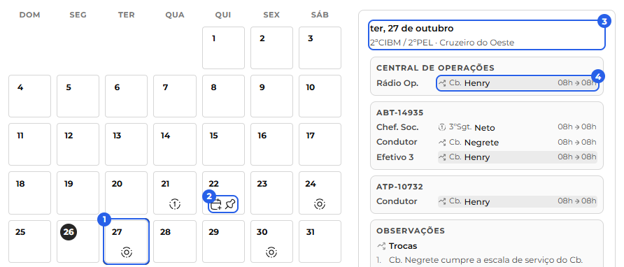
- O dia escolhido
- Os ícones do dia
- A escala do dia, na sua unidade
- O seu nome destacado
A escala de todos. As outras abas mostram a escala da unidade inteira, dia a dia. Na primeira vez, a Escala abre na aba Mês, na Agenda; depois, abre na última aba que você usou. Nas grades, o seu nome aparece com um fundo cinza claro, para você se achar rápido. Para achar alguém rápido, use a busca Pesquisar militar e digite um nome (também vale CPF ou RG). A busca tem dois modos, no botão ao lado do campo: Marcar (o padrão), que realça o militar na grade mantendo os demais visíveis, e Filtrar, que mostra só quem você procurou. Depois de digitar, aperte Enter (no celular, a tecla da lupa do teclado): a tela vai até o militar achado e o destaca com um contorno, e a busca mostra a contagem, como "2 de 7". Cada Enter vai ao próximo e, depois do último, volta ao primeiro; no computador, Shift+Enter volta ao anterior. As buscas da Extrajornada, de Usuários e de Folgas funcionam do mesmo jeito.

Filtrar a escala. Nos modos Mês e Colunas, antes da busca, fica o botão Filtros. Ele abre a coluna Situação, para ver só um tipo de serviço: Prontidão (quem está no ciclo, os contínuos), Trocas, Extrajornada, Pontual ou Folgas. Quem está de férias, licença ou dispensa aparece quando você marca Afastamentos, numa linha listrada que diz até quando vai o afastamento (por exemplo, "Férias até 15/10"). Afastamentos soma ao que já está marcado: com Todos, aparecem todos e mais os afastados; para ver só os afastados, desmarque Todos. O número no botão diz quantos filtros estão ligados, e a linha Filtros, embaixo da barra, mostra quais: o x de cada etiqueta tira só aquele filtro, e Limpar filtros tira todos. Os filtros voltam vazios quando você sai da página.

- Botão Filtros
- Todos e Afastamentos marcados
- Os filtros ligados
- Militar afastado
Os dias de serviço do militar ficam destacados na grade, com o horário. O espaçamento entre eles segue o ritmo configurado para a unidade, como o 24/48, e pode variar de uma unidade para outra.

Sempre em hoje. A Escala abre no dia de hoje, já rolada até ele, com o começo de hoje no alto e uma pontinha do que veio antes à vista: na Agenda, o fim do dia anterior logo acima; no Calendário, o fim da semana anterior. Quando você passa com as setas para outro dia, semana ou mês, aparece o botão Hoje logo depois da seta da direita: um clique volta para hoje.
A Escala tem vários modos de ver: Minha escala, Mês, Militares e Colunas. Todos mostram a mesma escala, de jeitos diferentes; use o que for melhor para você. Ela abre no último modo que você usou.
Contínuos, pontuais e a distribuição do dia
A base da escala é o ciclo. O administrador também pode escalar um militar num dia avulso, e a cada dia as pessoas de serviço são distribuídas nos postos. Entender essas ideias ajuda a ler a escala e os ícones dela.
Contínuos. A maior parte do efetivo entra na escala por um ciclo: a unidade tem um ritmo, por exemplo 24/48 (24 horas de serviço e 48 de folga), e cada militar roda nesse ritmo. Definido o dia em que começa, o sistema projeta sozinho os próximos serviços dele, por meses à frente. Os contínuos são os militares que estão na escala de forma regular, por esse ciclo.
Pontuais. O administrador pode escalar um militar só num dia, fora do ciclo, em um ou mais horários, inclusive um militar de outra unidade. Ele trabalha naquele dia e segue fora do ciclo nos demais.
A distribuição do dia. Ao clicar num dia na grade, abre um painel à direita com aquele dia montado: no alto, a unidade e a data e, abaixo, os postos, as funções e quem está em cada uma. Quem está de extra no dia aparece no posto e na função, com o ícone da extrajornada. No alto, à direita, fica o botão de imprimir aquele dia (veja Imprimir a escala).
No alto ficam os avisos do dia, em vermelho os erros graves e em amarelo as ressalvas (a lista completa está em Erros e ressalvas da escala, logo abaixo), e o horário em que uma função ficou sem ninguém aparece em vermelho, com a função também vermelha. Depois dos postos vêm Sem função (com o título vermelho: quem está de serviço sem função em algum horário), De folga e as Observações. O painel mostra os postos que têm alguma função no dia. Um posto com menos gente que o efetivo mínimo entra nos avisos, por exemplo "Efetivo abaixo do mínimo: ABT-01 (2 de 3)", com o horário quando isso acontece só numa parte do dia. Quando outra viatura serve no lugar de uma por alguns dias, o painel mostra o prefixo dela e, embaixo, de qual viatura e até quando, por exemplo "No lugar da ABT-14935 até 25/10".
A Central de Operações. No pelotão, a Central pode mostrar também, antes das funções dela, o Oficial de Área, o Chefe de Socorro e o Cabo de Dia e, depois delas, quem está de Extrajornada, com o horário. É só para ver: eles continuam no posto deles. O Cabo de Dia é o cabo ou soldado mais antigo de serviço na unidade, sem contar o Chefe de Socorro. A impressão do dia mostra a Central do mesmo jeito.

- Unidade e data
- Imprimir o dia
- Postos, com as funções e os militares de serviço
Os ícones da escala
Ao lado do nome de cada militar, a escala mostra ícones. Eles falam de coisas diferentes: uns dizem por que o militar está trabalhando, outros marcam quem deixou o serviço, e outros falam da função, do próprio militar ou das observações do dia.
Origem do serviço. Diz por que o militar está trabalhando naquele dia. Toda linha de serviço tem um, e só um, destes ícones. Quando o dia do militar tem partes de origens diferentes, ele aparece numa linha para cada parte.
- Entrada. O primeiro dia do militar no ciclo. Só o administrador cria a entrada, ao incluir o militar pelo Adicionar da aba Ciclo, na data escolhida. Vale para a primeira vez e para cada volta ao ciclo, como o retorno de uma licença ou dispensa longa, a readmissão ou a chegada de outra unidade.
- Contínuo. Os dias seguintes do ciclo, que o sistema projeta sozinho pelo ritmo da unidade, até cerca de 90 dias à frente.
- Saída. O último dia de serviço do militar antes de ele sair do ciclo, e o par da Entrada. O militar sai do ciclo quando o administrador usa o Tirar da aba Ciclo, na baixa, na transferência, numa licença ou dispensa longa que o administrador decide tirar do ciclo, e quando ele passa a administrativo, pela ficha ou por pedido aprovado no Meu perfil.
- Pontual. Escalado só naquele dia, pelo Adicionar militar do painel do dia.
- Troca. O militar está cobrindo um colega no trecho de uma troca aprovada: no dia do serviço, quem aceitou a troca; no dia da devolução, quem a pediu.
- Extrajornada. Horas extras pagas pelo estado, lançadas na escala pela página Extrajornada.
Nome riscado. Marca quem deixou o serviço naquele dia. Na grade da escala, o nome aparece riscado, como em 3ºSgt. Meireles, e com dois ícones: a origem que o militar tinha no dia e o motivo da saída. Na célula, os nomes riscados ficam no fim da lista, depois de quem está de serviço: primeiro os de folga, depois os de troca, cada grupo pela antiguidade. Quem passou só parte do serviço aparece duas vezes: entre os de serviço, com as horas que cumpre, e riscado no fim, com as horas que passou. No painel do dia, essas saídas ficam na caixa Observações.
- Folga. O militar folgou o dia, ou um trecho dele, pelo banco de horas da página Folgas.
- Troca. O militar passou o serviço, ou parte dele, para um colega numa troca aprovada.
Função. Fala do lugar que o militar ocupa no dia.
- Função fixada. O administrador definiu manualmente a função do militar no painel do dia. O sistema mantém essa escolha quando recalcula a escala. Aparece junto do ícone de origem.
- Aviso. O sistema colocou o militar nessa função com uma ressalva, como o grau rebaixado por falta de efetivo ou o rodízio repetido por falta de opção. Parando o mouse sobre o militar, aparece o motivo. Aparece no painel do dia.
Militar. Fala do próprio militar.
- Tem regra. O militar tem uma regra própria na unidade: é exclusivo de certas funções ou proibido nelas, conforme a página Distribuição, em Regras. Parando o mouse sobre o ícone, aparecem as regras. Aparece no painel do dia.
- De outra unidade. O militar é de outra unidade e, naquele dia, tira o serviço nesta, como o extra de outro pelotão. Parando o mouse sobre o ícone, aparece a unidade dele. Aparece no painel do dia.
Observações. Fala do dia como um todo.
- Nota do administrador. Um recado que o administrador escreveu para aquele dia, na caixa Observações do painel. A mesma caixa organiza o dia em grupos, sempre na mesma ordem: Administração (os recados), Trocas, Folgas e De outra unidade, cada um com os itens numerados, como "1. Sd. Sampaio veio do 2ºPEL das 08h às 20h.". Dentro de cada grupo, os militares seguem a antiguidade.

- Copiar as observações
Copiar as observações. No título da caixa Observações, à direita, o ícone de copiar copia o texto das observações, como um Ctrl+C, para você colar numa mensagem ou num documento: sai cada grupo com os seus itens numerados. Depois de copiar, o ícone vira um visto por alguns segundos.
Na tela, a mesma explicação fica na Legenda: no alto da página Escala, à direita, o botão da Legenda (o ícone de quadradinhos com linhas, ao lado da impressora) abre uma caixa com o que aparece no modo em que você está. No modo Militares, a caixa mostra os selos da grade. Nas grades de Mês, Colunas e Calendário, ela traz todos os ícones e explica também o gráfico de cobertura no alto de cada célula, que pinta cada hora de uma cor:
- Verde: tudo certo naquela hora.
- Amarelo: uma ressalva. A escala funciona, com um erro aceitável.
- Vermelho: um erro grave. A escala não funciona como está e precisa de correção.
Parando o mouse sobre o gráfico, aparecem a hora e quantos militares estão de serviço, e a faixa de cada militar mostra em claro o trecho do turno.

- Botão Legenda
- Cobertura e o que mais aparece na célula
Cada tela mostra uma parte desses ícones:
- Grade (Mês, Colunas e Calendário): a origem do serviço, o nome riscado e a função fixada.
- Painel do dia: a origem do serviço, a função fixada, o aviso, o Tem regra e o De outra unidade. As notas do dia, as trocas, as folgas e quem veio de outra unidade ficam na caixa Observações, cada um no seu grupo.
- Modo Militares: ao clicar num dia, o painel escreve a origem por extenso, por exemplo "Origem: Contínuo". Na grade, cada dia mostra o horário do serviço (riscado quando o militar passou o serviço numa troca), FÉR, LIC ou DIS no afastamento e o ícone de Extrajornada na hora extra.
Militar afastado não vai assumir. Pode acontecer de um militar assumir um serviço por troca e, mais tarde, entrar de férias, licença ou dispensa naquele mesmo dia. Nesse caso ele continua na lista do serviço, mas com um aviso amarelo: na prática ele não vai assumir, porque está afastado.
Ao lançar o afastamento, o administrador é avisado de que aquele militar cobre um serviço por troca e decide se segue; seguindo, o serviço fica marcado em amarelo, na linha do militar e na lista de avisos do dia, para a cobertura ser resolvida.

- Aviso amarelo de militar afastado
- Militar marcado em amarelo no posto
Erros e ressalvas da escala
A escala usa duas cores para avisar que algo não está certo. O vermelho é um erro grave: a escala não funciona como está e precisa de correção. O amarelo é uma ressalva: a escala funciona, com um erro aceitável.
Na grade, o erro aparece só pela cor das barras do gráfico de cobertura, hora a hora. Para saber o que é, clique na célula: o painel do dia lista os avisos no alto, primeiro os vermelhos e depois os amarelos, e marca o militar envolvido. A lista traz só os erros principais: o que acontece por causa de outro erro não aparece à parte. Quando um posto fica abaixo do mínimo, por exemplo, ela mostra esse posto, sem repetir os postos que ficaram vazios por causa dele nem o chefe que assumiu a direção nele; quando uma viatura trava, mostra a viatura, sem repetir a tripulação. Corrigido o principal, o que ainda estiver errado aparece na lista. Os vermelhos vão da causa para a consequência: primeiro quem ficou sem função, depois os postos e, por último, o militar em situação errada. Parando o mouse sobre ele, aparece o motivo.
Erros graves (vermelho).
- Existe militar sem função (ou Existem militares sem função): o militar está de serviço, mas fica sem função em parte do dia. Quem é cada um aparece na caixa Sem função; parando o mouse sobre ele, aparece o motivo.
- Viatura sem condutor habilitado: quem acumula o Condutor não tem a CNH que a viatura pede, e ninguém do posto pode dirigir no lugar dele. O aviso diz a viatura e a CNH, como "Viatura sem condutor habilitado: ABS-0055 (CNH B)". A viatura aparece em vermelho, com as cadeiras vazias, para o administrador resolver.
- Viatura sem condutor: a viatura ficou sem ninguém na direção.
- Efetivo da unidade abaixo do mínimo: a unidade tem menos gente de serviço que o mínimo dela, por exemplo "Efetivo da unidade abaixo do mínimo: 5 de 6". O sistema calcula esse mínimo pela Distribuição: é o menor número de militares que deixa todos os postos com o mínimo, contando uma vez quem acumula ou cobre outro posto. O posto reserva e o que fica fora da escala sem aviso não contam.
- Posto fora da escala: o posto que a Distribuição manda ficar fora da escala quando não há gente para o mínimo dele, por exemplo "AA-0020 fora da escala: abaixo do mínimo de 2". O aviso tem a cor escolhida na Distribuição (vermelho ou amarelo; com "sem aviso", não aparece), e o cartão do posto, no painel do dia, fica na mesma cor.
- Efetivo abaixo do mínimo: o posto tem menos gente que o mínimo configurado.
- Efetivo acima do máximo: o posto tem mais gente que o máximo configurado.
- Funções fora da disponibilidade: um militar ocupa uma função num horário fora do serviço dele.
- Militar sem serviço no dia: um militar ocupa uma função num dia em que não está de serviço.
- Dois militares no mesmo horário: a mesma função tem duas pessoas na mesma hora.
- Condutor sem a CNH exigida: o condutor não tem a categoria de CNH que a viatura pede.
- Função proibida pela regra: o militar está numa função que a regra dele proíbe.
- Militar em duas unidades ao mesmo tempo: o mesmo militar está em funções de duas unidades no mesmo horário, por exemplo "Sd. Sampaio está em duas unidades diferentes ao mesmo tempo (2ºPEL e 1ºPEL)". Um militar não acumula funções em unidades diferentes; quando a escolha do administrador causa isso, a mudança não é gravada. Em horários diferentes ele pode, sim, servir em duas unidades no mesmo dia, por exemplo de extra num pelotão e como pontual em outro.
Ressalvas (amarelo).
- Grau rebaixado por falta de efetivo: faltou militar do grau ideal e a função ficou com um de outro grau.
- Grau diferente do ideal: a função ficou com um militar fora do grau ideal, por ser o exclusivo dela ou por escolha do administrador.
- Rodízio repetido por falta de opção: o militar repetiu a função do último serviço, porque não havia outro.
- Condutor exclusivo indisponível: o condutor exclusivo da viatura não estava disponível e outro motorista assumiu a direção.
- Chefe assumiu a direção: faltou condutor e o chefe da viatura passou a dirigir.
- Militar afastado, não vai assumir o serviço: quem cobre um serviço por troca entrou de férias, licença ou dispensa naquele dia.
- Efetivo abaixo do ideal: o posto tem pelo menos o mínimo, mas menos gente que o ideal configurado, por exemplo "Efetivo abaixo do ideal: ABT-01 (3 de 4)". Esse aviso aparece no painel do dia e na Distribuição, sem mudar a cor da grade. O posto reserva (mínimo 0) não avisa.
- Militar exclusivo fora da sua função: um militar exclusivo de uma função foi colocado em outra.
- Central sem Cabo de Dia: nenhum cabo ou soldado de serviço para ser o Cabo de Dia, quando a Distribuição pede o erro amarelo. Só o administrador vê esse aviso, no painel do dia.
A hierarquia dos erros. Quando a unidade tem menos gente que o mínimo dela, aparece só "Efetivo da unidade abaixo do mínimo": os postos que ficaram abaixo do mínimo ou fora da escala por causa disso não aparecem à parte, e o cartão de cada um fica na cor do erro. Num dia com 5 militares no 1ºPEL, por exemplo, a lista mostra apenas "Efetivo da unidade abaixo do mínimo: 5 de 6", e o cartão da AA-0020, que ficou fora da escala, fica vermelho. O posto fora da escala também não repete o mínimo nem o condutor dele. Quando um posto fica sem gente só porque os acúmulos por falta dele vinham de um posto mais importante, também abaixo do mínimo, aparece só o erro do posto mais importante. A falta de condutor por CNH é outra causa e aparece sempre.
Alterações manuais. Quando o administrador corrige um erro, a hora volta ao verde. O rastro fica no rodapé do painel do dia: as Alterações manuais, com a quantidade ao lado. Ao abrir, aparecem quem mexeu, quando e o quê, entre os ajustes da distribuição, os militares pontuais e as entradas e saídas do ciclo daquele dia. Todos podem ver. Num dia sem alteração, o rodapé não aparece.

- Alterações manuais, com a quantidade
- Uma alteração: quem mexeu, quando e o quê
Imprimir a escala
Para levar a escala ao papel ou enviar por mensagem, use o botão com o ícone de impressora, no alto da página Escala, o último à direita, depois da Legenda. Ele aparece em todos os modos, menos na Minha escala, e para todos.

- Botão Imprimir
No painel de um dia também há um botão de imprimir, no alto da aba Dia, à direita. Ele abre a impressão daquele dia ali mesmo, no lugar da lista, já com o dia e a unidade do painel; o Voltar ao dia, no topo, volta para a lista.
Enquanto houver uma mudança no dia ainda não salva, o botão de imprimir do painel fica apagado: salve antes de imprimir, porque o PDF sai do que está gravado.
Os dois botões abrem, à direita, o mesmo painel de impressão. Ele é igual em todas as impressões da escala; só muda o que sai no papel. No modo Militares e no painel do dia, sai a escala de cada dia, no painel Imprimir escala:
- Será impresso: a nota do alto resume o que vai sair, como "Escala de 21/10/2026, 2ªCIBM e 2ºPEL.". Se algum dia do período tiver erro grave, um aviso logo abaixo diz quais dias e unidades; o PDF sai do jeito que está na escala.
- Datas: De e Até já vêm com o dia que está na tela. Para mais de um dia, mude o Até ou use os atalhos Só este dia, 7 dias e Até o fim do mês. Cabem até 31 dias por arquivo.
- Unidades: a mesma árvore do seletor do alto, já marcada com as unidades que você está vendo e com a companhia de cada pelotão, que sai junto no papel. Se não quiser a companhia, desmarque. Para quem é de companhia ou pelotão, a árvore começa na companhia; a seta à direita do título mostra todas as unidades e esconde de novo. Marcar ou desmarcar aqui não muda o seletor.
- Mostrar: os ícones de origem antes do nome de cada militar, já marcados, como na tela. Com eles, o pé de cada folha traz a legenda dos ícones. Desmarque se não quiser os ícones no papel.
- Prévia: o próprio PDF, com as folhas como vão sair, e quantas são. Ela muda a cada escolha. No celular, a prévia não aparece, mas o Gerar PDF funciona.

- O que será impresso
- Datas e atalhos
- Unidades que vão no arquivo
- Ícones de origem no papel
- Prévia do PDF
- Gerar PDF
Ao clicar em Gerar PDF, o arquivo é baixado, pronto para imprimir ou compartilhar. Cada dia começa numa folha nova, com as unidades em sequência, a companhia primeiro, e o mesmo conteúdo do painel do dia: os postos, as funções, quem está em cada uma, os horários e as Observações. No alto da folha fica só a logo, e no rodapé o endereço do site e o número da página, com a legenda dos ícones logo acima.
Uma unidade que cabe numa folha nunca é dividida: se não couber no espaço que sobrou, ela vai inteira para a folha seguinte. A unidade maior que uma folha continua na seguinte só entre um posto e outro, com o nome repetido, a marca (continuação) e a data.
Na Agenda, no Calendário e no Colunas, o mesmo botão abre o painel de impressão com a grade que está na tela (Imprimir agenda, Imprimir calendário ou Imprimir colunas). O mês da tela (no Colunas › Unidades, a semana da tela) e os filtros ligados saem como estão, e as unidades da tela já vêm marcadas, com a companhia de cada pelotão; a nota do alto resume tudo, como "Será impresso: Calendário de outubro de 2026, 2ªCIBM e 2ºPEL, sem filtros.". Para imprimir outro mês, mude a tela antes de abrir o painel. O PDF sai do jeito da tela: o Calendário e o Colunas › Dias em A4 paisagem, a Agenda e o Colunas › Unidades em A4 retrato. Além das unidades e da prévia, que funcionam como acima:
- Semanas (Calendário): Mês todo já vem marcado. Para imprimir só algumas semanas, desmarque: aparecem os botões das semanas do mês, já com a semana de hoje. Marque as que quiser; embaixo aparecem as datas, e passar o mouse num botão também mostra as datas dele.
- Dias (Agenda e Colunas › Dias): Do dia e ao dia, que já vêm com o mês todo. As listas só mostram os dias que o mês tem, e o "ao dia" começa no "Do dia": não dá para escolher uma data que não existe nem inverter a ordem. No Colunas › Unidades não há o que escolher: sai a semana da tela.
- Formato: Folhas A4, para imprimir, ou Página contínua, uma página só, na largura da A4, que cresce para baixo, sem quebras. A página contínua é boa para ver na tela, não para imprimir.
- Mostrar: o gráfico de cobertura, os ícones de origem e a faixa do horário, todos marcados, como na tela. Desmarque o que não quiser no papel. Com os ícones, o pé de cada folha traz a legenda deles.

- O que será impresso
- Mês todo ou algumas semanas
- Unidades que vão no arquivo
- Formato: folhas ou página contínua
- O que sai em cada dia
- Prévia do PDF
No papel, uma semana do Calendário nunca é dividida: se não couber no espaço que sobrou, ela vai inteira para a folha seguinte. Os dias de outro mês, no começo e no fim do Calendário, saem vazios, como na tela. Só quando uma semana sozinha é maior que uma folha (muitas unidades na tela), ela continua na seguinte entre uma unidade e outra, com os dias repetidos e a marca (continuação). Na Agenda, o dia nunca é dividido e cabem até 4 unidades lado a lado; com mais, os dias se repetem com as outras unidades.
Montar o ciclo: a aba Ciclo Apenas administradores
No painel do dia, você monta quem está no ciclo pela aba Ciclo, que só o administrador vê. Ela já abre pronta para editar, e uma nota no alto lembra que as mudanças valem a partir daquele dia e seguem nos próximos. Cada mudança fica marcada na tela e o Salvar aplica todas de uma vez.
O ciclo. A aba mostra, em "Contínuos do dia", quem o ciclo escala naquele dia (quem está de folga aparece riscado) e, em "Fora da escala", quem não está no ciclo. Ali, você coloca e tira militares da escala:
- Colocar na escala. Em "Fora da escala", o Adicionar marca um militar para entrar no ciclo a partir daquele dia. É assim que se coloca alguém na escala, inclusive o retorno de quem saiu por uma licença ou dispensa longa, de quem foi readmitido depois de uma baixa ou de quem chegou por transferência (a partir da data dela). Quem está de férias, licença ou dispensa naquele dia aparece com o selo do afastamento, por exemplo "Férias até 22/11", e sem o Adicionar: durante o afastamento o militar não entra na escala, e o sistema também não aceita colocá-lo no ciclo numa data do afastamento. Quem já tem a entrada marcada aparece com "Entra em DD/MM", também sem botão; para mudar a data, abra o dia da entrada e use o Tirar.
- Tirar da escala. Em "Contínuos do dia", o Tirar marca a saída daquele dia em diante. Na escala, o último dia de serviço antes da saída ganha o ícone de Saída. Tirado no dia em que entrou no ciclo, sem serviço antes, o militar some da escala. Quando já há saída marcada, aparecem "Sai em DD/MM", o Cancelar saída, que apaga a saída e o deixa seguir no ciclo, e o Tirar, que traz a saída para o dia aberto. Cada entrada abre um período próprio, que vai até a saída dele ou até a véspera da próxima entrada. O Tirar e o Cancelar saída mexem só no período do dia aberto: a entrada seguinte e o que é dela continuam como estão.
Cada mudança recebe um selo ("Vai entrar" ou "Vai sair") e o Salvar aplica todas de uma vez, recalculando a escala uma única vez.

- Botão Tirar, que marca a saída
Tirar do ciclo mexe no que dependia dele. Ao clicar em Tirar, e também ao dar baixa ou transferir, a janela de confirmação mostra a lista do que vai acontecer a partir da data: cada troca, folga e extra do militar e o que acontece com ela. O que já aconteceu não é desfeito. A troca em que nenhuma parte aconteceu é cancelada inteira; se uma parte já aconteceu, só a outra sai e fica um saldo entre os dois, em Trocas, na aba Saldos. A troca de outros dois militares feita sobre um serviço que sai também é cancelada, e aparece na lista. As trocas canceladas assim levam o motivo, como "Cb. Lemos saiu da escala.", que aparece no painel delas e no registro. As folgas que ainda não aconteceram são canceladas, e as horas descontadas voltam ao saldo. As extras saem da escala e da Extrajornada, e as horas voltam para a cota dele. Quem tinha troca ou folga cancelada recebe um aviso, e os dois militares de uma troca que perdeu uma parte recebem o aviso "Troca alterada", com o saldo. O que foi cancelado não volta, mesmo que o militar volte ao ciclo depois.
Só naquele dia. Para escalar um militar só num dia, sem entrar no ciclo, use o Adicionar militar da aba Dia (veja Ajustar o dia, logo abaixo).
Ajustar o dia Apenas administradores
Na aba Dia do painel do dia, você ajusta aquele dia. Para o administrador, a aba já abre pronta para editar: a lista é a mesma que todos veem, com o menu Editar o dia no alto do painel (Adicionar militar, Remover militar, Remanejar militar e Registrar troca de serviço), o nome de cada militar numa caixa de escolha, e o lápis em cada linha. As mudanças valem só para aquele dia e ficam esperando o Salvar, no rodapé largo da página, que grava tudo de uma vez; até lá, a escala da página já mostra o dia como vai ficar.
Desfazer e Refazer. Os ícones no alto do painel, à direita, desfazem a última mudança e a refazem (também pelo teclado: Ctrl+Z desfaz e Ctrl+Y refaz). Valem para as mudanças feitas enquanto o painel está aberto naquele dia; ao fechar o painel ou trocar de dia, começam do zero. Desfazer não manda aviso a ninguém: se você deu folga a um militar e desfez, ele não recebe aviso de folga cancelada; se você cancelou uma folga e desfez, ela volta como era.

- Abas Dia e Ciclo
- Menu Editar o dia
- Imprimir, Desfazer e Refazer
- Lápis, que abre a edição da linha
Trocar quem está numa função. O nome de cada militar fica numa caixa de escolha, com a setinha. Para trocar, por exemplo, o Condutor do dia, clique no nome dele: logo embaixo abre a lista de quem pode sentar ali, com a função e o horário no alto e a busca. Ela vem em grupos: quem está na mesma viatura, quem está sem função, quem está em outro posto e quem está de folga, separado por unidade. Ao lado de cada nome aparece o que acontece se você escolher, como "Efetivo 3, trocam de lugar" ou "Entra só neste dia". No fim, apagados, ficam os que não podem, com o motivo: o Chefe de Socorro, quem não tem a CNH da viatura, quem tem uma regra que proíbe a função ou quem está ocupado nesse horário.
Clique no nome escolhido. A mudança grava na hora:
- Quem já tem função nesse horário troca de lugar com quem sai: cada um fica com a função do outro.
- Quem está sem função entra, e quem sai fica de serviço sem função.
- Quem está de folga entra só neste dia, e o sistema pergunta se as horas entram no banco de horas dele (Contabilizar ou Não contabilizar). Se ele for o mais antigo do dia, a lista já avisa que ele vai assumir o Chefe de Socorro (ou o Oficial de Área).
Para voltar atrás, use o Desfazer: a troca inteira volta de uma vez. Para trocar só uma parte do dia ou trazer alguém de folga de outra companhia, use Mais opções, no fim da lista: ele abre o mesmo formulário do Adicionar militar, já com a função e o horário. O Chefe de Socorro e o Oficial de Área não têm a caixa, porque são sempre o mais antigo de serviço.
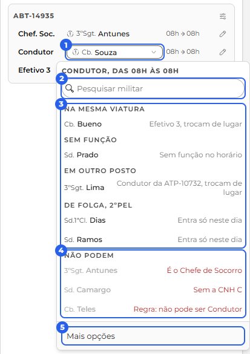
- Caixa de escolha do Condutor
- Busca
- Quem pode entrar, em grupos
- Os que não podem, com o motivo
- Mais opções
Adicionar militar. Abre um formulário em três partes:
- Quem: escolha a unidade (a lista abre na unidade do painel, mas vale qualquer unidade do estado) e procure o militar pelo nome. A lista vem separada por unidade: primeiro a unidade escolhida, depois as outras unidades da companhia. Aparece qualquer militar (operacional, administrativo ou aluno) que tenha horas livres nesse dia e não esteja afastado. Quem já tem parte do dia ocupada aparece com isso ao lado do nome, por exemplo Extra das 08h às 02h: ele pode entrar nas horas que sobram, aqui ou em outra unidade. Se ele for o mais antigo do dia, o formulário avisa que ele vai assumir o Chefe de Socorro (ou o Oficial de Área).
- Quando: o horário de serviço dele, dentro do dia de serviço, das 08h às 08h. Ao escolher o militar, o horário já vem com as horas livres dele. Se o horário cruzar o que ele já tem no dia, os campos ficam vermelhos e o botão Adicionar ao dia fica desligado até você corrigir. Para mais de um horário no mesmo dia, por exemplo das 20h às 21h e das 00h às 08h, use o ícone Adicionar horário.
- Onde: deixe em O sistema distribui, para o sistema refazer a distribuição do dia com ele (quem foi fixado manualmente continua no lugar), ou escolha o posto e a função. Embaixo de cada função aparece como ela está nesse horário: vazia, ou quem sai dela.
Ao clicar em Adicionar ao dia, o sistema pergunta se as horas entram no banco de horas do militar (Contabilizar ou Não contabilizar). Quem vem de outra unidade trabalha aqui só naquele dia; se ele for de outra companhia, os administradores da área dele recebem um aviso no sino.

- Unidade e busca do militar
- Horário, com o Adicionar horário
- Onde: o sistema distribui ou você escolhe a função
O militar no dia. O lápis de uma linha abre o dia daquele militar: uma régua com o serviço dele e as Funções no dia.
- Deixar uma função: desmarque a caixa da função. A tela avisa o efeito, por exemplo que o lugar fica vazio naquele horário.
- Mudar o horário: clique no início ou no fim e escolha a hora, dentro do serviço dele. O ícone Adicionar horário põe mais um horário na mesma função.
- Dar função: num horário em que ele está de serviço sem função.
- Nova função: põe o militar em outra função, no horário que você escolher. Se ele já tem função nesse horário, passa a acumular as duas, no mesmo posto ou em outro posto da unidade (nunca em unidades diferentes).
- Tirar do dia: o militar do ciclo fica de folga naquele dia, e o sistema pergunta se as horas saem do banco de horas dele; o militar escalado só naquele dia sai da escala. Se ele também tem extra no dia, sai só o horário escalado só naquele dia, e a extra continua (a extra muda só na página Extrajornada).
Clique em Aplicar para gravar a mudança e voltar à lista.

- Caixa de marcar: desmarcada, ele deixa a função
- Horários, com o Adicionar horário
- Nova função e Tirar do dia
Cancelar uma folga. Quem está de folga no dia aparece riscado na caixa De folga, também com o lápis. Ele abre a folga daquele militar: o horário dela, se foi contabilizada no banco de horas e o que acontece ao cancelar. O botão Cancelar folga pede a confirmação; ao confirmar, o militar volta ao serviço naquele dia, a distribuição é refeita, ele recebe um aviso e, se a folga foi contabilizada, as horas voltam ao saldo dele. Vale para qualquer folga do dia: dada aqui, na página Folgas ou por um pedido aprovado. Para sair sem cancelar, use Voltar ao dia.
Horário sem ninguém. Quando você tira alguém de uma função num horário, esse horário fica vermelho, numa caixa de escolha vermelha: Sem ninguém, escolher. Ela abre a mesma lista de quem pode sentar ali (veja Trocar quem está numa função, acima). Na vaga vazia, quem já tem função nesse horário deixa a dele, que fica vazia. A linha mexida tem ainda o ícone Voltar ao automático, que desfaz o ajuste.

- Linha mexida: cadeado e Voltar ao automático
- Horário sem ninguém, na caixa vermelha Sem ninguém, escolher
O que você muda nas funções ganha o ícone de Função fixada (cadeado), fica por cima do automático e continua valendo mesmo quando o sistema recalcula a escala. Quando alguém entra ou sai do dia, o sistema refaz a distribuição automática daquele dia, e a lista mostra na hora como ficou.
O Chefe de Socorro e o Oficial de Área são sempre o mais antigo de serviço, conforme a normativa, e ficam travados: não dá para tirar, trocar nem mudar o horário deles. Se você puser no dia alguém mais antigo, ele assume o papel, e a lista avisa no alto quem assume no lugar de quem.
As observações do dia ficam no fim da lista, em grupos: Administração, Trocas, Folgas e De outra unidade. O botão Adicionar observação inclui uma nota no grupo Administração, e o ✕ exclui as suas. Elas também gravam na hora.
As regras de cada militar valem também para os seus ajustes. Colocar um condutor sem a CNH exigida pela viatura, ou um militar numa função que a regra dele proíbe, não grava: o sistema avisa o motivo e a lista fica como estava. O mesmo vale para o horário fora do serviço do militar, dois militares no mesmo horário, o militar em duas unidades ao mesmo tempo e o posto acima do efetivo máximo. Se o dia já tinha um erro em vermelho de antes, ele não impede as outras mudanças, e você o corrige quando quiser. Colocar um militar exclusivo fora da sua função, ou com grau diferente do ideal, fica em amarelo e grava normalmente.
Se outro administrador mexer no mesmo dia enquanto o seu painel está aberto, a sua próxima mudança não grava: o sistema avisa, mostra o dia atualizado e você faz a mudança de novo.
Os postos (o efetivo, a viatura, uma substituição ou um fora de serviço) mudam na Distribuição: veja Os postos e Substituição, fora de serviço e exclusão.
Lançar a escala no SYSBM Apenas administradores
O Roster leva a escala de um pelotão para a tela de cadastro da escala do SYSBM, o sistema oficial, para você não precisar digitar tudo lá. O Roster nunca entra no SYSBM: o login e o Salvar são sempre seus.
O envio funciona só no navegador Mozilla Firefox, no computador ou no celular Android, com a extensão Roster Work. Em outro navegador, o bloco mostra só o aviso de que a funcionalidade está disponível apenas no Firefox.
No painel do dia de um pelotão que você administra, o último bloco, depois das Observações, é o Lançar no SYSBM. No Firefox sem a extensão, ele mostra o botão Instalar a extensão: clique nele, e a página da extensão abre numa aba nova, na loja do Firefox. Clique em Adicionar ao Firefox e confirme. Ao voltar para o Roster, o bloco já mostra: Extensão instalada. Já pode enviar. É uma vez só em cada aparelho, e depois a extensão se atualiza sozinha. Com a extensão, o bloco começa fechado:
- Enviar (1): leva a escala do pelotão naquele dia e abre o SYSBM em outra aba (nas vezes seguintes, traz para a frente a mesma aba, sem recarregar).
- Quem fica de fora (2): em amarelo, mesmo com o bloco fechado. Por exemplo, o militar sem RG no cadastro fica de fora, porque o SYSBM acha o militar pelo RG.
- Chevron (3): abre o bloco, com o resumo, o motivo de quem fica de fora e a explicação.
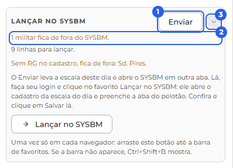
- Enviar
- Quem fica de fora
- Chevron: o resumo e o favorito
Para lançar a escala de um pelotão:
- No Roster, abra o painel do dia do pelotão e clique em Enviar. Na primeira vez, aparece o Termo de responsabilidade do envio ao SYSBM: leia e clique em Concordo. A sua ciência fica registrada, e o termo só volta se o texto dele mudar. O SYSBM abre em outra aba.
- No SYSBM, faça seu login, se ele pedir. A extensão espera o login por até 10 minutos.
- A extensão abre o Cadastrar da escala, pesquisa o dia e abre a aba do pelotão. Lá, ela ajusta quem já estava, desmarca quem saiu, adiciona quem falta e põe tudo na ordem do Roster. No fim, ela mostra um resumo, com o que precisa ser lançado manualmente.
- Confira a aba e clique em Salvar no SYSBM.
Se a tela de cadastro já estiver aberta em outro dia, a extensão pergunta antes de pesquisar, porque o que não foi salvo nela se perde. Faça um pelotão por vez: no SYSBM, cada Salvar vale só para a aba aberta. Enviar de novo no mesmo dia não repete ninguém.
Na conversão, o Oficial de Área vai em todas as abas, na viatura dele. A Central de Operações leva o que a Central do pelotão mostra na escala, escolhido no cartão Exibir na Central de Operações da Distribuição: o Oficial de Área, o Chefe de Socorro, o Cabo de Dia e, por último, quem tira extra (que também fica na viatura onde trabalha), como Voluntário Extrajornada. Quem você desmarcou não vai para a Central, e a extensão desmarca a linha dele lá. Num dia sem Cabo de Dia, o Cabo de Dia que já estiver no SYSBM fica como está. O Chefe de Guarnição é o mais antigo de cada período, menos na viatura em que estão o Oficial de Área ou o Chefe de Socorro, que não acumulam com Condutor. O Roster não lança Chefe de Linha: quando acha um, troca para Auxiliar de Guarnição ou, se o militar não está na escala, desmarca. Na aba, vêm primeiro as instalações, depois a viatura do Oficial de Área e depois as outras viaturas. As Observações, o Sobreaviso, as equipes do COBOM e o PGV continuam sendo lançados no SYSBM, como antes. A viatura com outro prefixo no SYSBM é lançada pelo número, quando só uma viatura de lá tem esse número, e o resumo avisa; sem isso, aparece para lançar manualmente.
Pendências
A faixa no alto das páginas
Quando alguma coisa espera a sua resposta, aparece uma faixa amarela no alto de todas as páginas, acima do título, com o pedido mais urgente (1). Assim você responde sem precisar abrir a Pendências. Na faixa aparecem:
- A troca que um colega pediu a você, com os dias, como "você tira o serviço em 05/11 (qui) e a devolução é em 08/11 (dom)", e os botões Ver detalhes, Recusar e Aceitar (3).
- A troca que espera o seu aceite, já aprovada, com o selo Falta aceitar e os botões Ver detalhes e Aceitar. Ela fica sempre amarela, porque a troca já vale na escala.
- O prazo da extra, quando faltam 5 dias ou menos, com o botão Responder.
O selo (2) diz quanto falta para o primeiro dia da troca: "Faltam 10 dias", "Amanhã" ou "Hoje". Com 5 dias ou menos, o pedido é urgente, e o selo e a faixa ficam vermelhos. Quando há mais de um pedido, o botão Ver todos abre a página Pendências. O Aceitar pede a confirmação e mostra o resumo com Desfazer, como no painel; o Recusar abre o pedido ao lado, já na recusa, para você escrever o motivo, se quiser; o Ver detalhes abre o pedido completo. Se faltar espaço, o texto termina em reticências, e os botões ficam sempre à vista.
O X (4), no canto, esconde a faixa até você trocar de página ou recarregar. Ela volta sozinha se chegar um pedido novo ou se um pedido ficar urgente. O pedido cujo dia já passou sai da faixa e fica só na Pendências. No celular, a faixa ocupa mais de uma linha: o texto, o selo embaixo dele e os botões dividindo a largura.
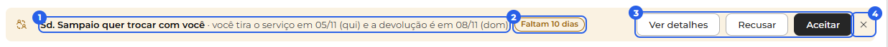
- O pedido, com os dias
- Quanto falta
- Os botões para responder
- Esconder a faixa
Para o administrador, a faixa ganha uma segunda linha, com a etiqueta ADM, quando há pedido urgente para aprovar na sua área (serviço em até 5 dias), como "2 pedidos urgentes para aprovar · o mais próximo com serviço em 28/10 (qua)", com o botão Ver pedidos, que abre a Pendências. As trocas que ainda esperam o aceite dos militares não entram nessa linha.
O que espera a sua resposta
A página Pendências, a primeira do menu (no celular, na barra de baixo), reúne numa lista só o que falta você fazer. O número ao lado do nome, no menu, conta quantas coisas esperam você, e cada uma some quando é resolvida. O ícone de cada cartão diz o assunto: troca, folga, cadastro ou extra.
Precisa de você. Em cima fica o que espera a sua resposta, pela ordem do prazo, a data mais próxima primeiro. A troca que um colega pediu a você aparece como um cartão, com quem pediu, o dia do serviço e o resultado da análise; o mesmo pedido também está na aba Pendências da página Trocas. A troca que espera o seu aceite aparece como o cartão "Aceitar a troca com Cb. Henry", com o selo Falta aceitar: é a troca em que você entra e que foi aprovada ou registrada sem o seu aceite. A parte Solicitar uma troca explica esse aceite.
Ali também fica o prazo do pedido de extra: nos últimos dias, se você ainda não respondeu, aparece a contagem regressiva, como "Faltam 3 dias para pedir a extra de dezembro", com a data em que o prazo fecha. Clicar abre a Minha extra no mês do pedido, e o prazo some quando você responde, sim ou não.
Quando a sua CNH não está informada, aparece "Preencha a sua CNH", no fim da lista. Clicar abre o painel à direita com a CNH: escolha a categoria da sua carteira, ou Não tenho CNH, e clique em Salvar. A categoria vai para a aprovação de um administrador; "Não tenho CNH" vale na hora. Respondida, a pendência some; se o administrador recusar a categoria, ela volta.
Acompanhando. Embaixo ficam os pedidos que você fez e que esperam outra pessoa: os que estão em andamento, esperando o colega aceitar ou a aprovação, e os resolvidos nos últimos 30 dias, cada um com um selo que diz em que pé ele está (como Aguardando aprovação, Pendente, Aprovada, Recusada, Cancelada ou Expirada). Primeiro vêm os em andamento, depois os resolvidos, do mais recente. O pedido de várias trocas aparece num cartão só. Eles não contam no número do menu. Clicar num pedido abre o cartão ali mesmo, com o resumo e, no pedido ainda em andamento, o botão Cancelar pedido; o Ver detalhes abre o pedido completo (no seu pedido de folga, leva à página Folgas; no de correção de dados, ao Meu perfil).
Clicar no cartão abre o pedido ali mesmo, no próprio cartão: um resumo curto (os dias da troca, a análise e quem já aceitou e quem falta) e os botões Ver detalhes e Aceitar, para responder sem sair da lista. Clicar de novo na linha fecha o cartão. O Ver detalhes abre o pedido completo no painel à direita:
- O pedido. Em caixas: o serviço (o dia, o horário e quem trabalha no lugar de quem), a devolução e os aceites e a aprovação (quem já aceitou, quem falta e se a administração já aprovou).
- Análise (1). O que a troca muda na escala, uma nota por ponto: vermelha é um problema, amarela pede atenção e verde diz que está tudo certo. Ao lado do título fica o resultado: "Sem impacto", "2 pontos de atenção" ou "1 problema".
- Como fica a escala (2). Começa fechado. Ao abrir, mostra o dia inteiro do pelotão como ficaria: quem sai aparece riscado, quem entra pela troca ganha o selo Novo, e quem o sistema mudou de lugar por causa dela fica só com uma barra cinza à esquerda.
No rodapé ficam Recusar e Aceitar (3). Aceitando, a troca segue para a aprovação de um administrador. Recusando, você pode escrever o motivo, que vai no aviso para quem pediu, e a troca se encerra. Para recusar, abra o Ver detalhes: o cartão traz só o Aceitar.

- Análise, com o resultado e as notas
- Como fica a escala
- Recusar e Aceitar
Decidir os pedidos Apenas administradores
Para o administrador, os pedidos que esperam a decisão de um administrador entram na mesma lista do Precisa de você, junto com o que é seu: trocas, folgas e correções de dados. Cada um traz a etiqueta ADM (1) antes do texto, para você saber que a decisão é de administrador; o que é seu, como militar, vem sem ela. Os seus próprios pedidos também aparecem ali, e você pode decidi-los.
Cada pedido de administração mostra o pelotão (2), porque você cuida de todos os pelotões da sua área, e o resultado da análise (3). A lista vem pela ordem do prazo, a data mais próxima primeiro; a correção de dados, que não tem data, vai para o fim.
Abrir ali mesmo (4). Clicar num cartão abre o pedido no próprio cartão, com um resumo curto: na troca, os dias (os primeiros, e "e mais" quando há muitos), a análise, só com o título de cada nota e o resultado, e quem já aceitou e quem falta, com os selos Aceitou e Pendente (quem não tem conta no sistema leva também Sem conta, porque nunca vai conseguir aceitar); na folga, o dia, o horário, o motivo e a análise; na correção de dados, o que muda. Embaixo, o botão da decisão (Aprovar ou Aprovar com pendências), que pede a mesma confirmação e mostra o mesmo resumo com Desfazer do painel, e o Ver detalhes, que abre o painel de decisão completo, onde ficam também o Recusar e a escolha item por item da correção de dados. Abre um cartão por vez.

- A etiqueta ADM
- Pelotão do pedido
- Resultado da análise
- A troca aberta ali mesmo
- Para corrigir
- Acompanhando
Para corrigir (5). Embaixo do Precisa de você fica o que precisa de conserto e não é um pedido, cada item com a etiqueta ADM: os militares operacionais fora da escala (com o nome e o pelotão, para acertar pela aba Ciclo da Escala; não conta quem está de férias, licença ou dispensa, nem quem já tem a entrada no ciclo marcada para os próximos 4 dias), os retornos de afastamento sem entrada no ciclo (nos 5 dias antes da volta, quem não estará no ciclo e ainda não tem entrada marcada, com a data da volta), a Distribuição a revisar (quando uma mudança de posto abriu um período que ainda precisa de revisão) e a Distribuição com erro (quando um período atual ou futuro tem erro vermelho); estas duas levam à Distribuição. Nada aqui tem "lido": cada item some sozinho quando alguém resolve. Cada assunto soma 1 no número do menu, por mais nomes que a lista tenha: dez militares fora da escala contam como um item só. Eles não aparecem no sino, que é só dos avisos.
Trocas aguardando os militares (6). No Acompanhando, junto com os seus pedidos, ficam com a etiqueta ADM as trocas que já foram pedidas, mas ainda esperam o aceite de algum militar, com o selo Pendente. Elas não contam no número do menu, porque esperam os militares e não você; quem ainda não aceitou continua vendo a troca na tela dele. Quando todos aceitam, a troca passa para o Precisa de você, para você aprovar. Se não quiser esperar, você pode aprová-la antes, pelo Aprovar com pendências: ela vale na escala na hora, e o aceite que falta fica pendente no registro.
De onde vêm. Você recebe e vê os pedidos e os lembretes da área do seu papel: o administrador de pelotão, os do pelotão dele; o de companhia, os da companhia e dos pelotões dela; o geral, os de todas as unidades. Isso vale para as folgas, as correções de dados e os lembretes (militar fora da escala, retorno de afastamento e Distribuição a revisar). Uma troca aparece para quem administra qualquer um dos dois militares: numa troca entre pelotões, os administradores dos dois pelotões e os da companhia podem aprovar, e vale a decisão de quem decidir primeiro. Quando o militar tem uma transferência marcada, conta a unidade dele no dia do pedido: uma folga ou uma troca de antes da transferência é da unidade de origem, e uma de depois, da unidade de destino. O mesmo vale para as férias e as licenças, pelo início do período.
O painel de decisão. O Ver detalhes do cartão abre o pedido completo, com o pelotão no título (1). Depois do pedido em caixas vem a Análise, com o resultado ao lado do título (2) e uma nota por ponto (3). Para montar a análise, o sistema aprova o pedido de mentira, refaz a escala do dia e compara com a de hoje, usando os mesmos avisos que a Escala mostra. Como na Escala, aparecem só os problemas principais: quando um posto fica abaixo do mínimo, por exemplo, a nota é só a dele, sem uma para cada posto que ficou vazio por causa dele. Cada nota diz quem, onde e quando:
- Vermelha: um problema, como uma viatura que fica sem condutor, a unidade ou um posto abaixo do mínimo, um posto fora da escala, ou quem vai assumir o serviço estar inativo, de férias, licença ou dispensa, já ter uma hora extra no dia ou sobrepor outro serviço.
- Amarela: um ponto de atenção, como um militar que repete o rodízio, um posto que fica com menos gente, um acúmulo de funções ou o saldo de horas que a troca ou a folga cria.
- Verde: o que o pedido resolve na escala e, quando não sobra nada vermelho nem amarelo, "A escala continua sem problemas" (ou "Não cria problema novo na escala", quando o dia já tinha avisos).

- Pelotão do pedido
- Análise, com o resultado
- Uma nota: quem, onde e quando
Como fica a escala. Ao abrir a seção, o dia inteiro aparece como ficaria: quem sai, riscado na função de onde saiu (1); quem o sistema mudou de lugar por causa do pedido, só com a barra cinza à esquerda (2); e quem entra pelo pedido, com o selo Novo (3). O selo Novo só existe aqui, antes de aprovar: depois, a escala mostra a troca ou a folga do jeito de sempre.

- Quem sai, riscado
- Quem o sistema mudou de lugar: só a barra cinza
- Quem entra pelo pedido: o selo Novo
Aprovar ou recusar. O Aprovar fica disponível assim que a análise termina e pede uma confirmação. Quando a análise apontou um problema, o aviso é mais firme ("podem quebrar a escala. Aprovar mesmo assim?"): o sistema sinaliza, não trava, e a decisão é sua. Logo depois aparece um resumo com a opção de Desfazer. O Recusar abre, no próprio painel, a caixa do motivo (1), que é opcional e vai no aviso da recusa; Confirmar recusa (2) encerra o pedido e Voltar desiste. Depois de decidir, a lista se atualiza; na aba Pendências das páginas Trocas, Folgas e Usuários, o painel já abre o próximo pedido.

- Motivo da recusa (opcional)
- Confirmar recusa
Também nas páginas do assunto. Os mesmos pedidos aparecem na aba Pendências da Trocas, da Folgas e da Usuários, com o mesmo cartão e o mesmo painel. Decidido num lugar, o pedido some dos dois.
Trocas
Solicitar e acompanhar uma troca
Uma troca é quando outro militar cobre um serviço seu. Pode ser o serviço inteiro ou apenas uma parte das horas dele, e o colega pode receber de volta um serviço seu, a devolução, ou essa devolução pode ficar para depois. Num pedido só cabem uma troca entre dois militares ou várias trocas entre vários militares, com um número de registro só, que todos aceitam.
Como pedir. A troca é formalizada pela parte no E-protocolo. Se ela já existe, tenha o número por perto; se ainda não, você pode pedir a troca sem ele. Na página Trocas, clique em Solicitar troca. O painel abre com estes blocos:
- E-protocolo (1): o número da Parte e o Ano. A Parte é opcional: deixe em branco se ela ainda não existe. Preenchida, ela vai com o ano, que já vem com o ano atual e pode ser mudado, e vale para todas as trocas do pedido.
- Militares da troca (2): você já vem na lista, como quem pede. Para incluir o colega, escolha a unidade e o militar: ao escolher, ele já entra na lista, e o campo fica pronto para o próximo, se a troca tiver mais gente. A lista vem em ordem de antiguidade, e quem ainda não tem conta no sistema aparece com "sem conta no sistema" e pode ser escolhido normalmente. Podem entrar militares da sua companhia e dos pelotões dela. O Remover tira o militar e, junto, os dias em que ele aparece; se ele já tem dias marcados, o sistema pergunta antes.
- Dias da troca (3): o calendário do mês, com as setas para mudar de mês. Ficam acesos os dias, de amanhã em diante, em que um militar da troca está de serviço e outro está livre.
- Resumo das trocas (4): a cada dia marcado, o sistema monta sozinho como as trocas se encaixam, um dia por linha, com o horário de cada dia (explicado abaixo).

- Parte do E-protocolo: número e ano
- Militares da troca
- Dias da troca
- Resumo das trocas
Marcar os dias. Clique num dia aceso. Abre um quadro com duas perguntas: Quem trabalha? (1), com os militares da troca que estão livres naquele dia, e Quem folga? (2), com os que estão de serviço. Escolha um de cada. Quando só existe uma opção para cada pergunta, como na troca entre dois militares, o dia já fica marcado direto, sem o quadro. No calendário, o dia marcado mostra em cima quem trabalha e, embaixo, riscado, quem folga (3).
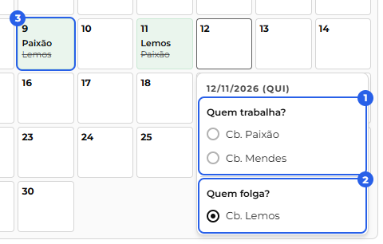
- Quem trabalha?
- Quem folga?
- Dia marcado: quem trabalha em cima, quem folga riscado
Clique de novo num dia marcado para ver as trocas dele, cada uma com Tirar esta troca. Se ainda houver quem possa trabalhar e quem possa folgar naquele dia, as duas perguntas aparecem de novo, para marcar mais uma troca no mesmo dia. Um serviço que já está em outra troca, aguardando ou aprovada, não acende para uma troca nova.
O resumo. A cada dia marcado, o sistema junta as trocas em grupos, com uma linha por dia: a data e o dia da semana, quem trabalha no lugar de quem e o horário.
- Duplas: dois militares que trabalham um para o outro. Os dias casam pela ordem das datas: o dia mais cedo é o serviço e o mais tarde, a devolução, que leva o selo Devolução. Por exemplo: "09/11, Cb. Paixão no lugar de Cb. Lemos" e "11/11, Cb. Lemos no lugar de Cb. Paixão".
- Roda: três ou mais militares, em que cada um trabalha no lugar de outro e a volta fecha no primeiro. Cada um trabalha um serviço e folga um, e ninguém fica devendo.
- Sem devolução: o dia que não fechou em dupla nem em roda. Quem folgou fica devendo as horas a quem trabalhou.
No fim do resumo, a nota verde avisa quando ninguém fica devendo. A nota amarela mostra quem fica devendo horas a quem. As notas contam também a dívida de horas que vocês já tinham, de trocas anteriores: quando o pedido acerta essa dívida, a nota verde diz "A dívida de horas que já havia fecha".
Dupla
Roda
Trocar só uma parte do serviço. Todo dia entra como serviço inteiro. Para trocar só algumas horas dele, clique no lápis do dia (1). A linha abre ali mesmo, com Serviço inteiro e Parte do serviço (2): escolha Parte do serviço e marque o início e o fim, com a régua do dia mostrando o trecho. O horário fica dentro do serviço de quem folga. Enquanto você mexe, a nota do resumo já mostra como ficam as horas (4). Clique em Pronto (3), e a linha mostra a parte escolhida, por exemplo "Parte do serviço, 08:00 às 20:00 (12h)". Abre um dia por vez; para voltar ao serviço inteiro, abra o lápis de novo e escolha Serviço inteiro.
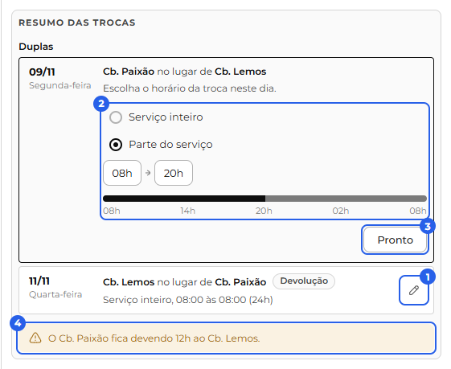
- O lápis do dia
- Serviço inteiro ou Parte do serviço
- Pronto
- A nota das horas
Pedir. Com os dias marcados, clique em Solicitar troca, no rodapé. Nasce um registro só, com o seu número RW, e pedir já é o seu aceite. O pedido nasce como "Aguardando confirmação" e segue para os outros militares. Se nenhum deles tem conta no sistema, ninguém tem como confirmar: o pedido já nasce como "Aguardando aprovação" e vai direto para o administrador.
Quando pedem uma troca a você. O pedido aparece na página Pendências, na aba Pendências daqui e nos seus avisos, num cartão só. Ao abri-lo, você vê a caixa Escalas trocadas (1), com uma frase por dia (o dia de parte do serviço traz o horário, como "das 08:00 às 20:00"), a caixa Aceites e aprovação (2), com o aceite de cada um, a análise e como fica a escala. Quem ainda não aceitou vê a nota "Falta você aceitar as trocas" no alto e os botões Recusar e Aceitar (3); na recusa, dá para escrever o motivo. O aceite e a recusa valem para o registro inteiro:
- Quando todos os militares que têm conta no sistema aceitam, o pedido vai para a administração. Quem ainda não tem conta não trava o pedido.
- Se um militar recusa, todas as trocas do registro são recusadas, e todos ficam sabendo.
- Enquanto o pedido espera, quem pediu pode desistir com Cancelar pedido.
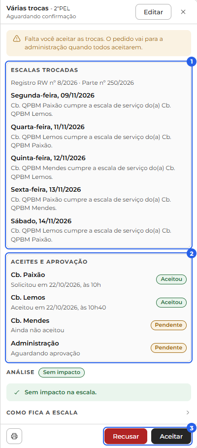
- Escalas trocadas
- Aceites e aprovação
- Recusar e Aceitar
Acompanhar as suas trocas. A página Trocas tem quatro abas (1): Todas (as trocas da sua unidade), Minhas (as que você participa, como solicitante ou solicitado), Saldos (as dívidas de horas em aberto) e Pendências (o que espera a sua resposta). Cada pedido fica numa linha, "Várias trocas:" com os nomes, o número RW e quantos militares participam (as trocas mais antigas, com os dois nomes e a seta), e traz um selo (2) com a situação: Aguardando confirmação, Aguardando aprovação, Aprovada, Recusada, Recusada pela administração, Cancelada, Expirada ou Substituída (a troca de antes de uma alteração aprovada).
O número do registro. Toda troca recebe um número do sistema, como RW nº 1/2026: a contagem é do ano e segue a ordem em que as trocas nascem. Ele aparece na linha da troca, na lista, e no painel, na caixa Serviço, junto com a Parte do E-protocolo. O número não muda depois; a alteração de uma troca aprovada ganha um número próprio.

- As quatro abas
- Selo com a situação da troca
A troca que não vale mais. A troca cancelada, expirada ou substituída não sai do sistema: ela continua na lista, com o registro guardado como estava. Ao abri-la, o painel mostra no alto uma nota (1) com o que aconteceu ("Substituída pelo RW nº 21/2026.", "Cancelada." ou "Expirada."), o dia, a hora e quem fez, o motivo e a frase "Esta troca não vale mais." (ou "Estas trocas não valem mais."). Na troca substituída, o botão Abrir o RW nº 21/2026 (2) abre a troca que vale agora. Quando a troca foi cancelada porque um militar saiu da escala, o motivo diz isso, por exemplo "Motivo: Cb. Lemos saiu da escala.".
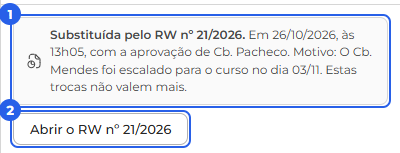
- A nota da troca que não vale mais
- Abrir a troca que vale agora
Os aceites. Cada militar da troca dá o seu aceite uma vez, e o painel da troca mostra a caixa Aceites e aprovação (2): quem já aceitou, com a data e a hora, quem ainda não aceitou e quem aprovou. Pedir a troca já é o aceite de quem pede, e aceitar o pedido é o do colega. Quando a troca é aprovada ou registrada pela administração sem o seu aceite, ela já vale na escala, e o painel mostra a nota "Falta você aceitar a troca" (1) e o botão Aceitar (3) no rodapé. Aceitar só registra o seu aceite: a escala não muda. A troca também aparece nas suas Pendências até você aceitar. Nas abas Todas e Minhas, a troca aprovada que ainda tem aceite faltando mostra dois selos, Pendente e Aprovada; clicar no Pendente abre ali mesmo a lista dos militares, cada um com Aceitou ou Pendente, e Sem conta para quem não tem conta no sistema e por isso não consegue aceitar.
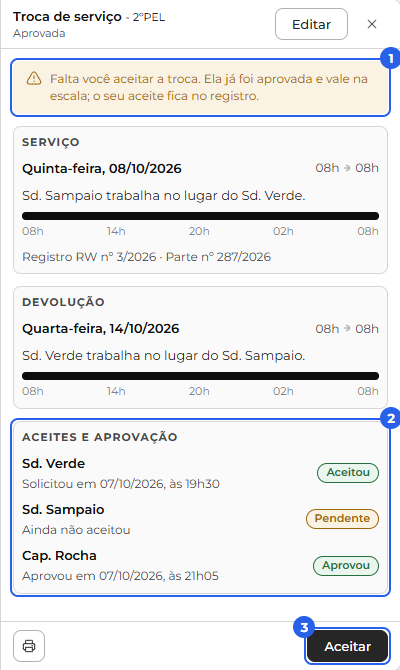
- Nota do aceite que falta
- Aceites e aprovação
- Botão Aceitar
Imprimir o registro. No começo do rodapé do painel da troca fica o botão com o desenho da impressora, Imprimir registro. Ele baixa, em PDF, o registro técnico da troca: o número RW, o código verificador e a hora em que foi gerado; a origem, a situação, a unidade e os documentos oficiais (a Parte); as escalas trocadas, uma por linha; o saldo de horas, quando a conta não fecha; e cada ação em ordem de data, com a hora, o militar e o CPF mascarado, inclusive os aceites que faltam. O botão aparece para os dois militares da troca e para o administrador da área. As alterações do registro também entram nas ações, cada uma com o que mudou e o motivo: a correção da Parte, a alteração do pedido, a substituição, o cancelamento e a expiração. O registro que não vale mais sai com um quadro no alto, como "SUBSTITUÍDO PELO RW nº 21/2026", "CANCELADO" ou "EXPIRADO", com quando, quem fez e o motivo, e com a marca d'água grande e clara em todas as folhas dele. Na troca substituída, o PDF traz os registros em sequência: o de antes, com a marca, e depois o que vale. Quando só um dia das várias trocas foi cancelado, o registro não leva a marca: o dia sai riscado, com a data do cancelamento. O registro reproduz os dados do sistema e não substitui os documentos oficiais.
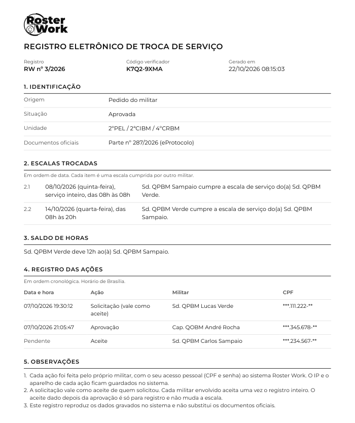
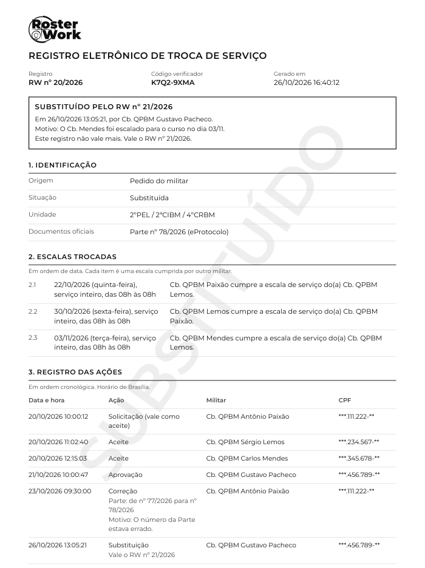
Imprimir as trocas. No fim da barra da página Trocas, à direita, fica o botão com o desenho da impressora. Ele aparece em todas as abas e para todos.
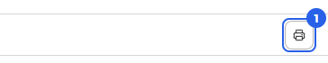
- Botão Imprimir
O botão abre o painel Imprimir trocas, para levar as trocas do mês ao E-protocolo ou guardar em PDF. É o mesmo painel de impressão da escala; só muda o que sai:
- Será impresso (1): a nota do alto resume o que vai sair, como "Lista de outubro de 2026, 3 trocas.".
- Trocas (2): as trocas do mês, pela data do serviço, as que estão aguardando e as aprovadas. Você vê as suas; o administrador vê também as da área dele. Todas já vêm marcadas. Use as setas para mudar o mês e desmarque o que não quiser.
- Texto para a Parte (3): o corpo da Parte, pronto. Escolha Informo para contar o que já aconteceu ("cumpriu") ou Solicito para pedir autorização para o que vai acontecer ("cumprirá"). Cada dia de serviço trocado vira uma linha (a., b., c.), em ordem de data. Use Copiar texto, cole na Parte do E-protocolo e assine lá.
- Formato (4): Lista, um relatório com uma linha por troca (o número RW, os dias, a Parte, os aceites e a aprovação; o dia cancelado sai riscado), Registro técnico, o mesmo do Imprimir registro, com uma folha por troca, ou Alterações, o relatório das alterações das trocas do mês: cada correção, alteração do pedido, substituição, cancelamento e expiração, com o que mudou, o motivo, quem fez e quando. As Alterações valem para todas as trocas do mês, marcadas ou não, inclusive as canceladas e as expiradas; sem nenhuma, a prévia avisa "Nenhuma alteração nas trocas deste mês.".
- Prévia (5): o próprio PDF, com as folhas como vão sair, e quantas são. Ela muda a cada escolha. Sem nenhuma troca marcada, ela avisa "Marque ao menos uma troca." (as Alterações não precisam de troca marcada). No celular, a prévia não aparece, mas o Gerar PDF funciona.
O botão Gerar PDF (6) baixa o arquivo. O texto e os PDFs são montados na hora, com os dados do sistema, e não substituem os documentos oficiais.
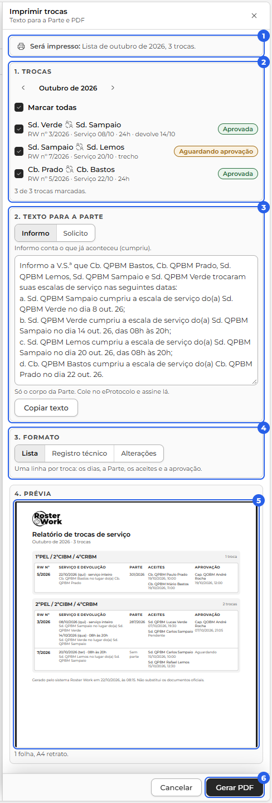
- O que será impresso
- As trocas do mês
- Texto para a Parte
- Formato do PDF
- Prévia do PDF
- Gerar PDF
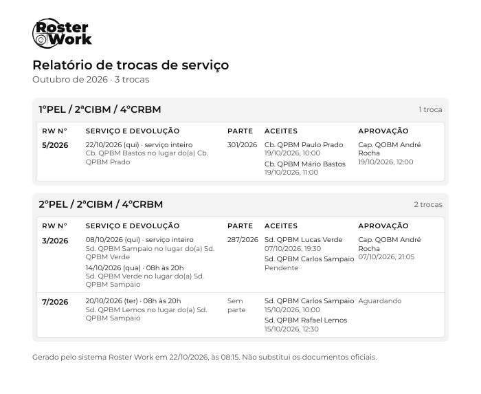
Cancelar o seu pedido. Enquanto o pedido está aguardando (confirmação ou aprovação), quem pediu pode abri-lo e usar Cancelar pedido (1). Depois de aprovado, apenas um administrador pode desfazê-lo.

- Cancelar pedido
A troca aprovada na escala. Depois da aprovação do administrador, a troca passa a valer na escala. No dia trocado, o militar que passou o serviço aparece riscado e quem assumiu entra no lugar, os dois com o ícone de troca. Havendo devolução, o mesmo acontece no dia dela, com os papéis invertidos. No painel do dia, o grupo Trocas das Observações escreve a troca por extenso, com a parte do E-protocolo (quando a troca tem) e a devolução, por exemplo: "Sd. Sampaio cumpre a escala de serviço do 3ºSgt. Meireles, no período das 08h às 20h, conforme a Parte nº 250/2026. A devolução será definida posteriormente.".

Devolução e pendências. Quando o pedido tem a devolução, com o dia e o horário do colega, as duas datas ficam casadas e ninguém fica devendo. Se a devolução tiver duração diferente do serviço, ou se um dia ficar sem devolução, a diferença vira uma dívida de horas: quem passou o serviço fica devendo a quem cobriu. As trocas de uma roda não geram dívida. A aba Saldos reúne essas dívidas, você vê as que envolvem você e o administrador vê todas.

Ver o histórico e cobrar. Clique num card para abrir, à direita, o histórico entre vocês dois: cada troca vira uma linha com a data, quem folgou e quem trabalhou e as horas, para você ver de onde o saldo veio. Um Ver mais traz as trocas mais antigas. Os dias de uma roda aparecem com a nota "Compensada na roda do RW nº…".
Nesse painel, quem tem horas a receber usa o botão Cobrar: ele abre o Solicitar troca com quem deve já na lista de militares. Marque o dia seu que o colega vai cobrir: esse dia já vem com as horas da dívida, e a nota do resumo mostra a dívida fechando. Quando a troca é aprovada, a dívida é acertada.

Alterar uma troca
Quando o combinado muda depois do pedido, ou quando a parte do E-protocolo sai depois, a troca pode ser alterada. Abra o registro (na aba Minhas, por exemplo) e clique em Editar, no rodapé do painel. Abre o mesmo formulário do pedido, já com o que vale hoje: a Parte, os militares, os dias marcados e o horário de cada dia. Você vem primeiro na lista, com "você". Dá para mudar a Parte, os dias (tirar a troca de um dia e marcar outros), o horário de cada dia, pelo lápis, e os militares (incluir quem entra e remover quem sai).
O que não muda. A nota do alto (1) lembra que os dias que já passaram ficam como estão: você muda as trocas de amanhã em diante. O dia que já passou continua marcado no calendário, e o quadro dele mostra só quem troca, sem o Tirar esta troca, com a frase "Este dia já passou e não muda." (3); no resumo, ele fica sem o lápis. Você (2) e quem tem um dia assim ficam sem o Remover.
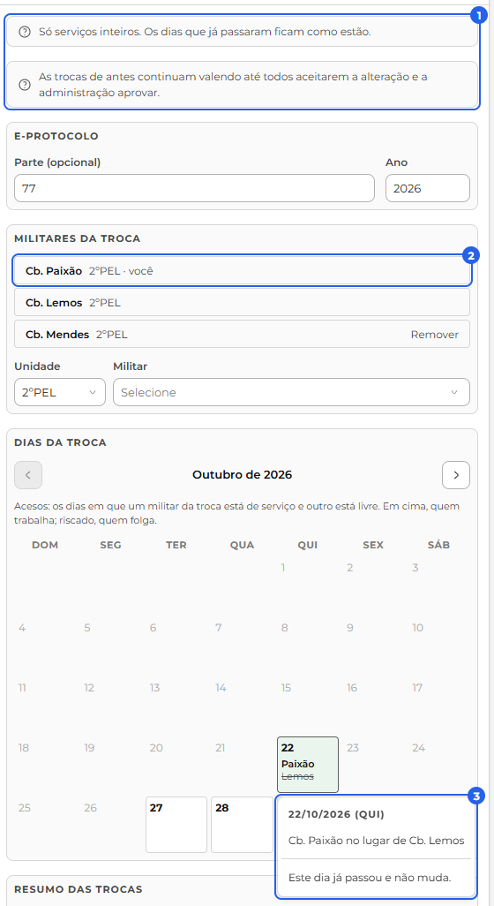
- As notas do Editar
- Você, sem o Remover
- O dia que já passou
Clique em Salvar. O que acontece depende do momento das trocas:
- Só a Parte do E-protocolo: vale na hora, para o registro inteiro, com o mesmo número RW, e os outros militares recebem o aviso. A correção fica anotada no registro.
- Pedido ainda aguardando: as trocas mudam no mesmo registro, com o mesmo número RW, e o pedido volta para os outros militares aceitarem de novo. O seu aceite já vale.
- Trocas já aprovadas: a mudança vira uma alteração, um registro novo, com o número RW dele. No fim do formulário, o Motivo da alteração é obrigatório quando os dias mudam: ele fica no registro das trocas e vai no aviso aos militares. Todos aceitam: os militares que ficam, os que entram e também quem sai da troca. Depois, a administração aprova. Até lá valem as trocas de antes, como diz a segunda nota do alto, e, se a alteração for recusada ou cancelada, nada muda. Aprovada, ela entra no lugar só nos dias que mudam, e as trocas de antes ficam na lista como Substituída.
O painel da alteração. Nas listas e nas Pendências, a alteração aparece com o selo "Alteração aguardando confirmação" (ou aprovação), e quem precisa aceitar recebe o cartão "Cb. Paixão quer alterar as trocas do RW nº 20/2026". O painel mostra a caixa Antes (1), com os dias e a Parte das trocas de antes, acima das Escalas trocadas novas. Quem sai da troca aparece nos aceites com "Sai da troca" (2), porque também aceita. Quem pediu a alteração pode desistir com Cancelar alteração (3), e as trocas continuam como estão.
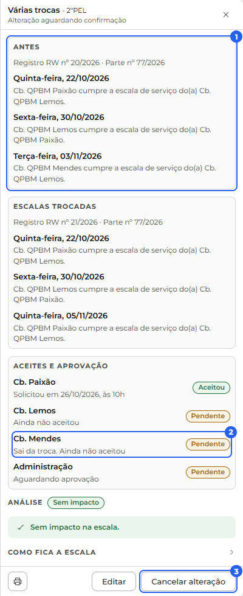
- Antes: as trocas como eram
- Quem sai da troca
- Cancelar alteração
Uma alteração por vez: enquanto uma espera, o painel das trocas de antes mostra o aviso no alto e fica sem o Editar. Se o serviço que as trocas passaram já foi trocado de novo com outra pessoa, cancele aquela troca primeiro: o sistema avisa qual é.
As trocas mais antigas. As trocas pedidas antes deste formulário, entre dois militares, abrem no Editar o formulário delas, com a Parte, o dia e o período do serviço e a devolução. Ao salvar, vale o mesmo: só a Parte vale na hora; aguardando, volta para o colega aceitar; aprovada, vira uma alteração.
Aprovar trocas Apenas administradores
Depois que o colega aceita, a troca fica "Aguardando aprovação" e espera um administrador. Ela aparece na página Pendências e na aba Pendências daqui; o painel de decisão, a análise e o Como fica a escala estão explicados em Pendências › Decidir os pedidos. Na caixa Serviço, a troca mostra o número do registro e a Parte nº do E-protocolo, para você conferir antes de aprovar. Quando o colega não tem conta no sistema, a troca já chega aguardando a sua aprovação, e a análise avisa que ele não confirmou.
As ações. No rodapé do painel, o que aparece depende do momento da troca:
- Enquanto ela ainda espera o colega aceitar, você pode Aprovar com pendências, que aprova sem aguardar o outro militar (útil quando ele demora a responder). Desde o pedido você recebe o aviso "Troca de serviço pedida", com quem falta aceitar, e a troca aparece na página Pendências em Aguardando os militares. A troca vale na escala, e o aceite dele fica pendente: ele ainda pode aceitar depois, só para o registro. Como o Aprovar, o botão só libera depois que a análise chega.
- Depois de aceita pelo colega, ficam Aprovar e Recusar (com o motivo opcional, que vai no aviso aos dois).
- Já aprovada, você ainda pode Cancelar troca (com a etiqueta ADM), que desfaz a troca e volta a escala ao que era. O botão abre, no próprio painel, a caixa Motivo do cancelamento (1), obrigatória: o motivo fica no registro da troca e na nota do painel dela e vai no aviso aos militares. Confirmar cancelamento (2) cancela; Voltar desiste. Se o serviço que ela passou a alguém foi trocado de novo com outro militar (uma troca em cima da outra), cancele primeiro essa outra troca: o sistema avisa qual é.
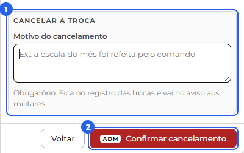
- Motivo do cancelamento
- Confirmar cancelamento
Numa troca da qual você participa, como quem pediu ou como o colega, você também vê os botões de decisão e pode aprovar ou recusar.
Aprovada, a troca passa a valer na escala (o riscado da seção anterior) e a dívida de horas entre os dois é acertada. Se, até lá, aquele horário do serviço já tiver sido trocado com outra pessoa, a troca não pode mais ser aprovada: a análise mostra isso em vermelho.
Afastamento depois da troca. Se, mais tarde, o militar que assumiu o serviço entrar de férias, licença ou dispensa naquele dia, quem lança o afastamento é avisado de que ele cobre um serviço por troca e decide se segue. Seguindo, a troca não é desfeita, mas a escala marca aquele serviço em amarelo, porque na prática ele não vai assumir.
Alterações. A alteração de uma troca aprovada chega como um pedido próprio, com o selo "Alteração aguardando aprovação" e a caixa Antes, e você aprova ou recusa como qualquer troca. Aprovada, só os dias que mudam são refeitos na escala. Logo depois de aprovar uma alteração, o Desfazer do resumo traz de volta a troca de antes, também refazendo só os dias que mudaram. Você também pode alterar direto uma troca da sua área da qual não participa: na página Trocas, abra a troca e use Editar. A Análise aparece antes de salvar, como no Registrar, e a mudança vale na hora, sem o aceite dos dois; quando os dias mudam, o Motivo da alteração é obrigatório. O dia pode ser de até 7 dias atrás.
Os pedidos do formulário. O pedido, de uma ou de várias trocas, chega nas Pendências num cartão só, e o painel Várias trocas mostra as escalas trocadas, os aceites, a Análise e o Como fica a escala do registro inteiro. A decisão vale para todas as trocas de uma vez:
- Enquanto alguém ainda não aceitou, fica o Aprovar com pendências.
- Depois que todos os que têm conta aceitam, ficam Aprovar e Recusar. O Aprovar é tudo ou nada: se um dos dias não puder mais ser aprovado, nenhum é, e o aviso diz qual serviço.
- Já aprovadas, o Cancelar trocas (com a etiqueta ADM) pede o mesmo motivo, obrigatório, e desfaz todas e volta a escala ao que era, em todos os dias. Se elas têm uma alteração esperando, a alteração é cancelada junto.
- A alteração de trocas aprovadas chega nas Pendências como "Alteração das trocas: Cb. Paixão, Cb. Lemos e Cb. Mendes", e o painel mostra a caixa Antes. O Aprovar pergunta "Aprovar esta alteração? Ela entra no lugar das trocas de antes e a escala é atualizada na hora, nos dias que mudam." Logo depois, o Desfazer do resumo traz de volta as trocas de antes.
Você também pode alterar direto as trocas da sua área das quais não participa: abra o registro e use Editar. Quando os dias mudam, a Análise aparece no fim da aba e o Salvar só libera quando ela chega. Nas trocas aprovadas, o sistema pede a confirmação e a mudança vale na hora, sem esperar o aceite dos militares, e o Motivo da alteração é obrigatório quando os dias mudam; num pedido em aberto, as trocas mudam e o pedido continua onde estava. O dia pode ser de até 7 dias atrás.
Para lançar trocas que chegaram pelo E-protocolo, veja Registrar troca, logo abaixo.
Registrar troca Apenas administradores
Quando as trocas chegam pelo E-protocolo e não foram pedidas no sistema, você mesmo as registra. Na página Trocas, clique em Registrar troca, o botão com a etiqueta ADM, ao lado de Solicitar troca. Abre o mesmo formulário do pedido (veja Solicitar e acompanhar uma troca), com a nota "As trocas entram já aprovadas, e cada militar aceita depois." no alto e estas diferenças:
- A lista de militares (1) começa vazia, e você não entra nela. Inclua pelo menos dois militares, da mesma companhia e dos pelotões dela; cada dia precisa ter um militar da sua área.
- Os dias podem ser de até 7 dias atrás, para registrar trocas que já aconteceram. O horário de cada dia muda pelo lápis, como no pedido.
- A Análise (2) do registro inteiro aparece no fim e é refeita a cada dia marcado e a cada horário mudado. O botão Registrar troca (3) só libera quando ela chega.
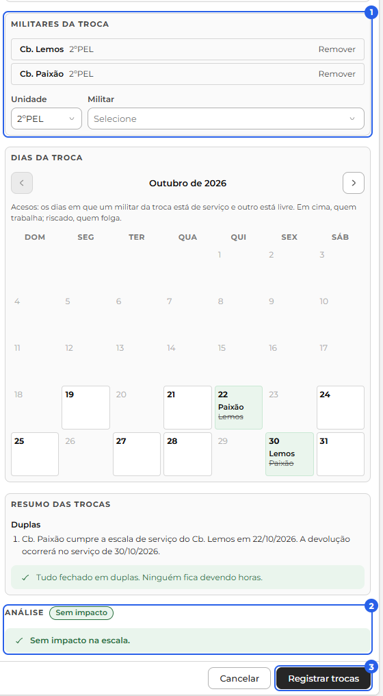
- Militares da troca, sem você
- Análise do registro inteiro
- Registrar troca
Ao confirmar ("Registrar estas trocas? Elas já entram aprovadas e a escala é atualizada na hora, em todos os dias."; quando a análise apontou um problema, o aviso é mais firme), as trocas já entram aprovadas: a escala muda na hora, em todos os dias, e cada militar recebe o aviso de trocas aprovadas. Os aceites ficam pendentes, e cada um aceita depois, pelas Pendências, só para o registro. Se o registro foi um engano, o Desfazer do resumo apaga o registro inteiro e volta a escala ao que era; o número RW fica pulado.
Você não registra uma troca da qual participa: o seu nome não aparece nas listas.
Folgas
Solicitar uma folga
Tirar uma folga é deixar de fazer um serviço que já está escalado para você, descontando as horas desse serviço do seu banco de horas de folga. É um sistema separado da Extrajornada (que é hora paga pelo estado); as horas daqui não são hora extra.
O seu saldo. O saldo é o seu banco de horas: ele sobe quando o administrador contabiliza um serviço que você fez a mais, além do seu ciclo, ou faz um ajuste, e desce quando você tira folga. Pode ficar negativo (você fica devendo horas), e o sistema avisa na hora de pedir. Um pedido em aberto não mexe no saldo até ser aprovado.
Como pedir. Na página Folgas, o botão Solicitar folga, no alto da página, abre um painel. Escolha um dia em que você está de serviço e o período: o serviço inteiro ou só uma parte do serviço, marcando o início e o fim, com a régua do dia mostrando o trecho. Pode escrever um motivo. No fim, o painel mostra quanto o pedido consome do banco de horas e como fica o seu saldo. O pedido nasce como "Pendente", e as horas só saem do seu saldo quando ele é aprovado.

- Dia da folga
- Período: serviço inteiro ou parte do serviço
- Quanto consome do banco de horas
Aprovação e escala. Um administrador Aprova ou Recusa. Aprovada, a folga passa a valer: na escala, no dia da folga, você aparece riscado e as horas são descontadas do saldo. Recusada, encerra; a recusa pode trazer o motivo, que chega no seu aviso.
Acompanhar e cancelar. A aba Minhas folgas reúne o seu saldo em destaque, os pedidos em aberto e o seu extrato (os lançamentos que sobem e descem o saldo), cada um com a sua situação. Enquanto o pedido está "Pendente", você pode cancelá-lo no botão ✕ ao lado dele; depois de aprovado, o cancelamento fica com o administrador.

- O seu saldo
- Cancelar o pedido, enquanto está Pendente
Aprovar e conceder folgas Apenas administradores
Na página Folgas, você tem duas abas a mais: Equipe, com o efetivo, e Pendências, com os pedidos de folga à espera.
Decidir um pedido. Os pedidos de folga ficam na página Pendências e na aba Pendências daqui. O painel mostra a caixa da folga (o dia, o trecho e o motivo), a Análise e o Como fica a escala, como explicado em Pendências › Decidir os pedidos. Como a folga tira o militar do serviço daquele dia, a análise olha o que a saída dele faz na escala: um posto que fica com menos gente (1), um que fica abaixo do mínimo, uma viatura sem condutor. Logo depois das notas da escala vem o saldo (2): quanto a folga consome do banco de horas e como o saldo dele fica. Se o saldo fica negativo, a nota é amarela e conta como ponto de atenção.
No rodapé ficam Recusar (com o motivo opcional, que vai no aviso ao militar) e Aprovar. Aprovada, a folga passa a valer (na escala o militar fica riscado e as horas saem do saldo dele) e aparece um resumo com a opção de Desfazer. Recusada, encerra.

- O que a saída do militar faz na escala
- O saldo do militar depois da folga
A aba Equipe. Ela mostra o efetivo em dois modos: Saldos, o saldo de cada militar, e Histórico, os lançamentos de folga do efetivo. Ao clicar num militar em Saldos, abre o painel dele com o extrato (saldo e lançamentos) e a aba Ações, com duas ferramentas. No extrato, a folga pendente, aprovada ou concedida tem o botão ✕ no fim da linha, que a cancela: o militar volta ao serviço na escala e, se ela foi contabilizada, as horas voltam ao saldo. O mesmo cancelamento está no painel do dia da Escala (veja Ajustar o dia). No seu próprio nome, a aba Ações traz só o Ajustar saldo: você ajusta o próprio saldo, mas não concede folga a si mesmo.
Dar folga. O botão Dar folga, com a etiqueta ADM, no alto da página, dá uma folga sem abrir o militar antes. Em Quem, procure o militar pelo nome: a lista mostra os das unidades escolhidas no topo, com o saldo de cada um. Depois, o dia, o período e o motivo seguem como no Conceder folga, logo abaixo.

- Quem: a busca e os militares, com o saldo
- Dia, período e motivo

- Abas Extrato e Ações
- Botões Conceder folga e Ajustar saldo
Conceder folga. Dá uma folga a um militar direto, sem depender de pedido. Abre dentro do painel dele, com Voltar às ações no alto. O calendário só oferece os dias em que ele está de serviço; você escolhe o dia e o período (o serviço inteiro ou uma parte, com o início e o fim) e confirma. Antes de gravar, o sistema pergunta se a folga entra no banco de horas: Contabilizar desconta as horas do saldo dele; Não contabilizar dá a folga sem mexer no saldo, e no extrato ela aparece como "Não contabilizada"; Cancelar volta ao formulário. A folga já vale (situação "Concedida") e ele aparece riscado na escala.
Ajustar saldo. Acerta o banco de horas manualmente: Adicionar ou Descontar uma quantidade de horas, sempre com um motivo. Também abre dentro do painel do militar, e uma nota mostra como o saldo fica, por exemplo "O saldo passa de 0h para +12h.". Serve para corrigir o saldo quando algo não passou pelo fluxo normal. Muda só o número, não mexe na escala.
Extrajornada
Pedir a extra do mês
A extrajornada é a hora extra paga: o estado paga em dinheiro para o militar trabalhar horas a mais. É um sistema separado das Folgas. O dia tem quatro horários fixos de 6 horas (08h às 14h, 14h às 20h, 20h às 02h e 02h às 08h) e cada horário vale uma cota; um serviço de 24 horas são 4 cotas. Só tira extra a praça voluntária com o termo recebido.
A página Extrajornada abre na aba Minha extra, no mês de hoje; as setas da barra levam aos outros meses, até o mês do pedido que já abriu. Para cada mês, ela mostra três passos: o Pedido, a Repartição das cotas e Os seus dias de extra. No alto, o selo diz como está o prazo do pedido, como "Faltam 5 dias para pedir".
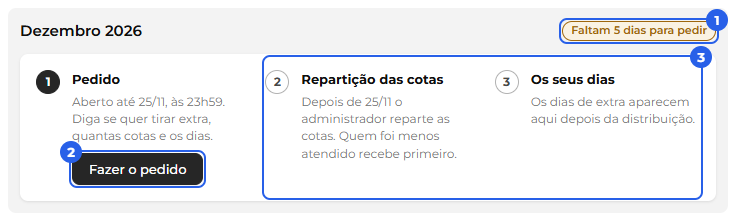
- O prazo do pedido
- Fazer o pedido
- As cotas que você recebe e os seus dias
Com o prazo aberto, o botão Fazer o pedido (ou Mudar o pedido, depois de enviado) abre o pedido à direita, em partes:
- Quer tirar extra? Responda Sim, quero ou Não quero. Em Não quero, o pedido termina aí.
- Quantas cotas? Escolha de 1 a 10. Quem só aceita serviços inteiros marca Só quero extras de 24 h, e as cotas ficam em 4 ou 8.
- Quais dias? Escolha o pincel Quero (verde) ou Não quero (vermelho) e clique nos dias do mês. Marque pelo menos 5 dias que você quer (ou todos os livres, se forem menos) e no máximo 10 que não quer. Os dias de serviço, troca, folga, férias, licença e dispensa já vêm travados. Em Ver, você escolhe o que cada dia mostra: os seus dias, onde falta gente ou quantos querem o dia.
- Termo. O pedido não substitui o termo do eProtocolo. Enquanto o termo não é recebido, o pedido mostra "Termo pendente", e sem ele você fica fora das cotas.
O botão Enviar pedido grava e abre o resumo.
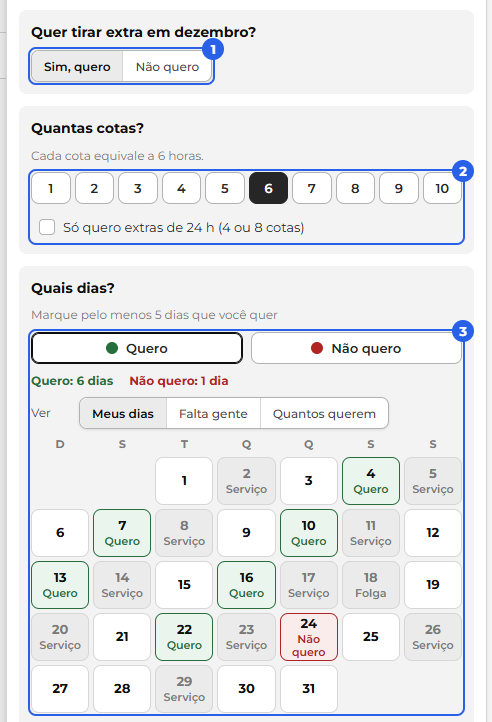
- Quer tirar extra?
- Quantas cotas e o Só quero extras de 24 h
- Os dias que você quer e os que não quer
O prazo. O pedido de um mês costuma abrir no dia 1º do mês anterior e fechar no dia 25, às 23h59; o selo da Minha extra mostra as datas do mês. Até fechar, dá para mudar o pedido quantas vezes quiser; depois, o botão vira Ver o pedido, só para ver. Quem ainda não respondeu recebe nos últimos dias a contagem regressiva em Pendências, no sino e na faixa do alto da página, como "Faltam 3 dias para pedir a extra de dezembro"; um clique abre a Minha extra no mês do pedido.
Depois do prazo, o administrador reparte as cotas, com prioridade para quem foi menos atendido nos últimos 12 meses, e coloca as extras nos dias. A Minha extra mostra as cotas que você recebeu e, depois que a extra entra na escala, os seus dias. Se uma extra sua mudar depois disso, você recebe um aviso no sino, como "Sua extra de novembro mudou", com o que mudou e o motivo.
A extra é só para praças: o oficial vê esse aviso no lugar do pedido.
Ver quem tira extra
A aba Extras do mês mostra quem tira extra em cada dia, por unidade, só para ler. Na barra, escolha a Agenda (um dia por linha e uma coluna por unidade) ou o Calendário (o mês em semanas, com um bloco por unidade em cada dia); a aba abre na última que você escolheu, a mesma da Escala. Cada extra mostra o militar, as quatro bolinhas dos horários (a cheia é horário de extra, na ordem 08h, 14h, 20h e 02h) e o ícone de quem a colocou: o sistema ou o administrador. A Legenda explica as marcas, e o Imprimir leva a grade da tela para o papel.

- Um militar de extra e os quatro horários
- Quem colocou a extra
Aqui aparece só o que já está na escala. Na página Escala, a extra aparece como serviço, com o ícone da extrajornada, e conta na cobertura da unidade onde o militar tira a extra. A extra não entra no banco de horas de folga.
Organizar o mês Apenas administradores
A aba Organizar o mês aparece para o administrador da companhia, inclusive o de um pelotão, e vale para a companhia inteira. Ela guia o mês em cinco passos, na barra: Pedidos, Cotas, Distribuição, Ajustes e Relatórios. O número fica verde no passo feito e escuro no passo da vez. À direita, o menu Ações traz o que o passo aberto faz; o que ainda não pode ser feito fica apagado, com o motivo escrito embaixo. A Legenda resume as regras de cada passo.
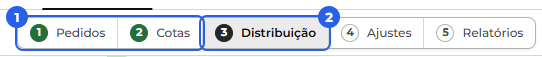
- Os passos feitos
- O passo da vez
Na aba Extras do mês, o administrador vê também a distribuição que ainda não foi lançada, com o aviso "O mês ainda está em distribuição e não foi lançado. As datas podem mudar até o lançamento.".
Pedidos, termos e cotas Apenas administradores
1 Pedidos. O Prazo do pedido tem Abre em, Fecha em e Avisar quem não respondeu (quantos dias antes de fechar); Salvar prazo grava, e o pedido sempre fecha antes de o mês começar. Ao lado ficam as Respostas, em três listas: Voluntários, Não querem e Sem resposta, com as cotas e os dias de cada um. Marque o Termo de quem entregou o termo pelo eProtocolo e salve no rodapé. Sem o termo, o militar fica fora das cotas e da distribuição, e as extras que ele já tinha saem. Ações › Fechar os pedidos agora fecha o pedido antes do prazo.
2 Cotas. Com os pedidos fechados, digite o total de cotas que a companhia recebeu e escolha em Repartir por: Entre todos (uma fila só, da companhia) ou Unidades (cada unidade com o seu total e a sua fila). Cada unidade é um bloco, com o Recebe de cada voluntário. Ações › Preencher pela sugestão reparte de forma justa: todos recebem o mesmo número, com no máximo 1 de diferença, ninguém recebe mais do que pediu, e a cota que sobra vai para quem foi menos atendido nos últimos 12 meses (no empate, o mais antigo); quem só aceita 24 horas fica com 4 ou 8. O Recebe de cada um você pode mudar. O total entregue não passa do recebido: se passar, o número fica vermelho e o Salvar trava.
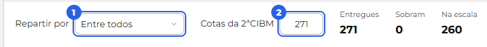
- Repartir por
- O total de cotas recebidas
Diminuir a cota de quem já tem extra colocada tira as extras que passam da cota nova.
Distribuir a extra do mês Apenas administradores
3 Distribuição. À esquerda fica a lista dos voluntários, na ordem da fila, em dois grupos: Faltam (quem ainda tem cota para colocar) e Completos, com as cotas de cada um, como "2 de 4". À direita, o calendário do mês, com um bloco por unidade em cada dia: a cobertura da escala e as extras do dia. O nome da unidade fica verde quando o dia está coberto e vermelho ou amarelo quando ainda falta gente.
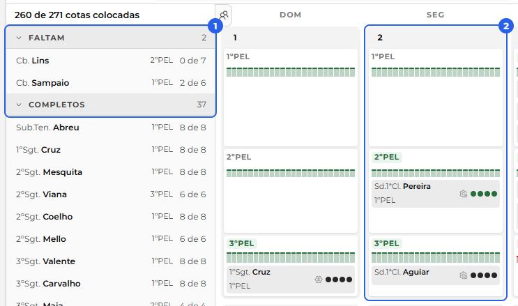
- Os voluntários que faltam e os completos
- Um dia do mês, com as extras de cada unidade
Pelo militar. Clique num voluntário da lista: embaixo do nome abrem as datas dele, com os quatro horários de cada uma, e o calendário passa a mostrar só ele, com as bolinhas grandes para marcar os horários em qualquer dia e pelotão (onde ele não pode, aparece o motivo). A borda das bolinhas segue o pedido dele: verde no dia que quer, vermelho no que não quer. A nota no alto diz quem está em foco e as cotas dele; o X da nota, ou um novo clique no nome, volta ao mês inteiro.
Ações › Preencher pela sugestão preenche o mês de uma vez. O cálculo pode levar até 1 minuto, e a tela mostra o andamento com o Cancelar. Ele nunca quebra as regras: só praça voluntária com termo, no dia em que ela está livre e não disse que não quer, sem passar da cota, sem 1 cota sozinha e sem 4 dias seguidos no quartel. Entre o que cabe, ele cobre primeiro a falta de gente (o vermelho antes do amarelo), deixa cada um no seu pelotão, segue a fila e prefere blocos de 24 horas, a extra colada ao serviço e o dia que o militar quer. As extras que você pôs ou mudou ficam travadas: a sugestão refaz só as do sistema. Desfazer a sugestão volta ao que estava.
O painel do dia Apenas administradores
Clique num dia do calendário para abrir o painel do dia à direita. No alto, o relatório do dia diz quem foi posto, por quê e o que ainda falta. A Cobertura do dia mostra as barras sem extra e com extra. Embaixo vêm os grupos: Neste dia, Querem este dia, Sem preferência, Não querem este dia e Indisponíveis, com o motivo, como "Serviço" ou "Férias".
Cada militar é uma linha: a bolinha da preferência dele, o nome, as cotas, como "4 de 6", e os quatro horários do dia, que você marca e desmarca. Com a cota cheia, o horário não marca: tire de outro dia antes. O que você muda fica na tela até o Salvar do rodapé, que grava tudo de uma vez e abre o resumo; o Cancelar volta ao que estava gravado.
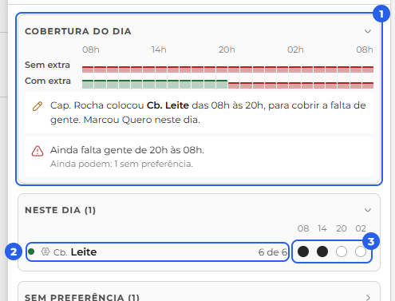
- Cobertura do dia
- O militar e as cotas dele
- Os quatro horários do dia
Lançar na escala e ajustar Apenas administradores
Ações › Lançar na escala e encerrar abre a conferência à direita e, com Lançar e encerrar, põe as extras do mês na escala. Cada extra vira serviço, conta na cobertura e entra na distribuição da unidade onde o militar tira a extra; o sistema refaz só os dias que mudaram. O lançamento só acontece com todas as cotas colocadas nas datas e antes de o mês começar. Depois dele, a Distribuição fica só para ver.
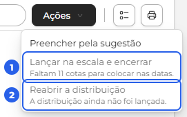
- Lançar na escala e encerrar, apagado enquanto falta cota
- Reabrir a distribuição
Ações › Reabrir a distribuição volta a liberar a Distribuição, até o mês começar. Enquanto ela está reaberta, a escala continua com o que foi lançado; o novo lançamento leva o que mudou.
4 Ajustes. Depois do lançamento, as mudanças se fazem nos Ajustes, na mesma tela da Distribuição. Escreva o Motivo do ajuste (opcional) e clique em Salvar e enviar para a escala: a mudança vai direto para a escala, fica registrada com o que era, o que ficou, quem fez e o motivo, e o militar recebe um aviso no sino. Os ajustes vão até 7 dias atrás: o dia mais antigo fica só para ver.
Relatórios Apenas administradores
5 Relatórios. À esquerda, as etapas do mês em ordem: Pedidos, Termos e cotas, Distribuição e lançamento, Ajustes do mês e Relatório final. A etapa feita ganha a marca verde e a de agora fica escura. À direita, a prévia do relatório de ajustes mostra quem mudou desde o lançamento, o que era, o que ficou e o motivo.

- Uma etapa e o Imprimir do relatório dela
Cada etapa tem o seu Imprimir, que abre o painel de impressão: escolha o relatório, o pelotão e se os pelotões saem separados ou numa lista só, confira a prévia e baixe o PDF. São quatro relatórios: os pedidos, os termos e as cotas, o relatório inicial (a extra como foi lançada) e o relatório final (com os ajustes), liberado a partir do dia 1º do mês seguinte.
Distribuição Apenas administradores
O que é a Distribuição
A Distribuição diz ao sistema como montar a escala de cada dia: quais postos a unidade tem, quantas pessoas cada um leva e quem senta em cada função. Ela é um questionário respondido uma vez por unidade e vale para qualquer número de militares de serviço: com 2, com 3 ou com 5, o sistema usa as mesmas respostas.
Abra Distribuição no menu. Na barra fica a unidade: a companhia e os pelotões da sua área de administração. À esquerda ficam os 9 blocos, cada um com o sinal de pronto ou de falta. À direita, as perguntas do bloco escolhido, em cartões fechados que mostram a resposta e abrem ao clicar no título, um por vez. No pelotão, o que é da companhia, como o Oficial de Área, aparece junto, e só o administrador da companhia muda.
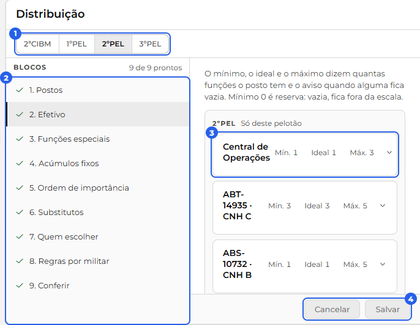
- Unidade
- Os 9 blocos, com o sinal de pronto ou de falta
- As perguntas do bloco
- Cancelar e Salvar
Os postos
O bloco Postos tem os lugares de serviço da unidade em dois cartões, Instalações e Viaturas. Fechados, eles mostram só a lista, numerada na ordem da escala: as instalações primeiro (1º Central de Operações) e as viaturas depois (2º ABT-14935 · CNH C). Embaixo de cada posto aparece a mudança com data, e o que falta, como a CNH, em vermelho. Para editar, clique no título do cartão, e ele abre com os postos, um por linha:
- Instalações são os lugares fixos, de três tipos, cada um com a sua função na escala: a Central de Operações (o Rádio Operador), o Rancho (o Rancheiro) e o Almoxarifado (o Almoxarife). Para incluir, clique em Nova instalação e escolha o tipo. A segunda do mesmo tipo ganha o número, como Central de Operações 2.
- Viaturas têm o prefixo (letras, hífen e número, como ABT-01), que é único no sistema inteiro, e a CNH exigida para dirigir. Só o Condutor precisa da CNH. As setas mudam a ordem, que é a ordem em que as viaturas aparecem na escala. Nova viatura inclui uma linha.
O posto novo passa a existir na escala a partir da data do Salvar. Trocar o prefixo ou a CNH de uma viatura também vale a partir dessa data, para sempre.
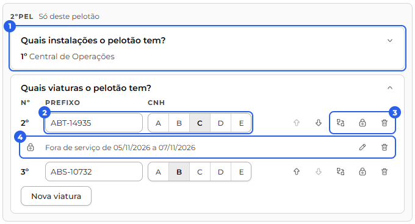
- Cartão fechado, com a lista
- Prefixo e CNH da viatura
- Substituir temporariamente, Fora de serviço e Excluir
- Uma mudança com data
Substituição, fora de serviço e exclusão
Três botões na linha do posto marcam uma mudança com data. Cada um abre uma caixa no lugar do posto: Concluir confere os campos e fecha, e Cancelar desfaz o que foi digitado. A mudança grava no Salvar da página, junto com o resto.
- Substituir temporariamente (só na viatura): outra viatura assume o posto de uma data até outra, com o prefixo e a CNH dela, as mesmas funções e a mesma ordem. Depois do fim, a original volta. Cada viatura tem uma de cada vez.
- Fora de serviço: o posto sai da escala de uma data até outra, como a viatura na oficina sem reserva, e volta sozinho depois do fim.
- Excluir (a lixeira): o posto sai da escala a partir de uma data. Até lá, ele continua na lista com o aviso "Será removida a partir de 20/11/2026"; depois, some. A viatura nova, ainda não salva, sai da lista direto.
Embaixo do posto fica uma linha para cada mudança, com o lápis para mudar e a lixeira para cancelar. As datas voltam no máximo 7 dias.
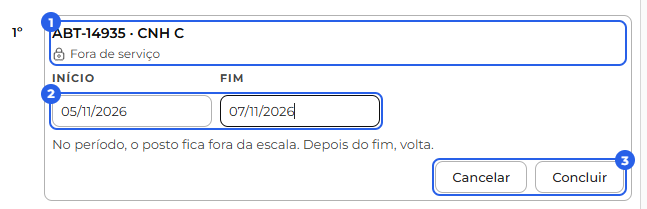
- O posto e o tipo da mudança
- Início e fim
- Cancelar e Concluir
O efetivo e as funções especiais
O bloco Efetivo tem um cartão por posto, com o mínimo, o ideal e o máximo de pessoas:
- O máximo diz quantas funções o posto tem: na viatura, o Condutor e os Efetivos; na instalação, o Rádio Operador, o Rádio Operador 2, e assim por diante.
- Abaixo do mínimo, a escala mostra um erro vermelho; abaixo do ideal, um aviso amarelo.
- Com mínimo 0, o posto é uma reserva: vazio, fica fora da escala, sem erro.
- Sem efetivo para o mínimo, o posto entra na escala incompleto ou fica fora da escala e libera o efetivo para os próximos postos da ordem. Você escolhe, e escolhe também o aviso quando ele ficar fora: nenhum, amarelo ou vermelho.
O bloco Funções especiais diz onde ficam o Chefe de Socorro, no pelotão, que é sempre o praça mais antigo de serviço, e o Oficial de Área, o oficial mais antigo. Na mesma pergunta, você diz se o Chefe de Socorro pode dirigir a viatura dele: sempre, só se não houver outro habilitado (com a caixa do aviso amarelo na escala) ou nunca (a viatura sem outro condutor fica com erro vermelho).
No pelotão com Central de Operações, o último cartão do bloco, Exibir na Central de Operações, diz quem a Central mostra na escala, além das funções dela: o Oficial de Área, o Chefe de Socorro, o Cabo de Dia e a Extrajornada, em caixas de marcar, todas marcadas no começo. Eles aparecem na Central nessa ordem, com a Extrajornada depois do Rádio Operador, no painel do dia, na impressão e no envio ao SYSBM, e continuam no posto deles. O Cabo de Dia é o cabo ou soldado mais antigo de serviço na unidade, nunca um sargento, e nunca quem é o Chefe de Socorro naquele horário (vai o seguinte). Quem já é Cabo de Dia continua até sair de serviço. Com o Cabo de Dia marcado, você escolhe o que acontece se não houver ninguém disponível (por exemplo, quando o único de serviço é o Chefe de Socorro):
- Aparece com erro amarelo: só você, no painel do dia, vê a linha Cabo de Dia em amarelo, "Sem cabo ou soldado de serviço", e o aviso no alto. A impressão, o SYSBM e quem não é administrador não mostram a linha.
- Não aparece e não exibe erro: ninguém vê a linha.
Quem senta em cada função
Os blocos seguintes dizem quem senta onde:
- Acúmulos fixos: funções que são sempre da mesma pessoa, como "o Rádio Operador é sempre de quem está no Efetivo 3 da ABT". Elas não precisam de gente própria. Vale a 1ª opção; sem ninguém nela, a 2ª, e assim até a 5ª.
- Acúmulos por falta: quando uma função fica sem gente, quem está na 1ª opção faz as duas; sem ninguém nela, vale a próxima. Sem nenhuma, a função fica vazia.
- Ordem de importância: cada linha é uma pessoa, com os acúmulos dela na mesma linha. Com N militares de serviço, enchem as N primeiras linhas, e quem sobra fica sem função. A função especial é sempre a 1ª. As setas mudam a ordem; dentro do mesmo posto, a ordem segue os lugares (Efetivo 2 antes do Efetivo 3).
- Quem escolher: para cada função, na ordem de importância, quem senta nela: o mais antigo ou o mais moderno que ainda não tem função, ou uma graduação ("Um 3ºSgt. ou o mais próximo", "Somente 3ºSgt. ou fica vazia"), com o aviso quando ela faltar. O rodízio evita que o militar repita a função do último serviço. O Condutor só fica com quem tem a CNH da viatura.
- Regras por militar: o que um militar não pode fazer ou só pode fazer (Condutor, Rádio Operador, Efetivo, Rancheiro ou Almoxarife). Cada regra é um cartão, com o militar no título.
Nos dois acúmulos, as opções são sempre de outro posto: dentro do mesmo posto, a Ordem de importância já distribui. Aberto o cartão, as setas mudam a ordem das opções, a lixeira tira uma opção (da 2ª em diante), Adicionar opção inclui uma linha e Remover acúmulo tira o acúmulo inteiro.
Quando o Chefe de Socorro pode dirigir a viatura dele, aparece um cartão travado do Condutor, com ele numa das opções e o cadeado. Em sempre, ele é a 1ª opção. Em só se não houver outro habilitado, você põe outras opções antes dele, como o Condutor de outra viatura, e só sem elas ele dirige.
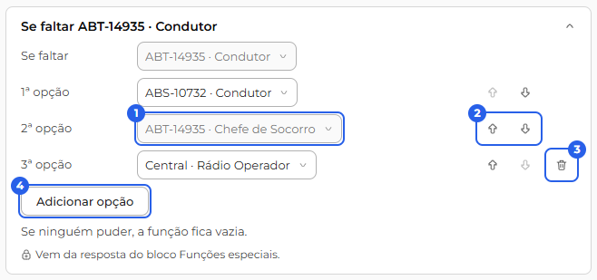
- O Chefe de Socorro, travado
- Setas que mudam a ordem das opções
- Lixeira, da 2ª opção em diante
- Adicionar opção
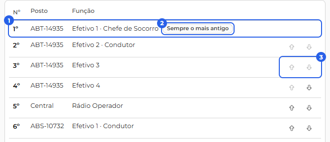
- Uma linha por pessoa
- A função especial, sempre a 1ª
- Setas que mudam a ordem
Conferir antes de salvar
O bloco Conferir mostra o resultado das respostas, sem gravar, de três jeitos: Tabela (a partir de um número de militares de serviço, ele e os quatro seguintes, uma coluna cada), Simular a equipe (quantos de cada graduação) e Um dia real (quem está de serviço numa data, com a CNH de cada um). Os avisos dos postos aparecem em caixas, primeiro os vermelhos.
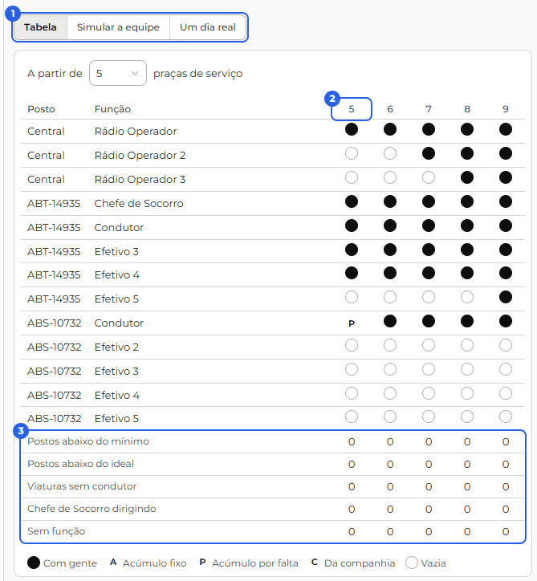
- Tabela, Simular a equipe e Um dia real
- Uma coluna para cada número de militares
- Os totais por posto
Salvar e a mudança agendada
O que você muda fica marcado, com "Alterações não salvas" no rodapé, até o Salvar. O Cancelar desfaz tudo. O Salvar pergunta a partir de quando a mudança vale: o padrão é o próximo serviço (o dia vira às 08h), e dá para escolher outra data, até 7 dias para trás. Embaixo da data vem o resumo do que muda.
Com uma data futura, a mudança vira a mudança agendada: um aviso no alto da página mostra a data, com Ver a mudança, Mudar a data e Cancelar a mudança. Cada unidade tem a distribuição em vigor e, no máximo, uma mudança agendada.
Ao salvar, a escala da unidade é refeita a partir da data, o resumo do que mudou abre na tela e fica no Histórico.
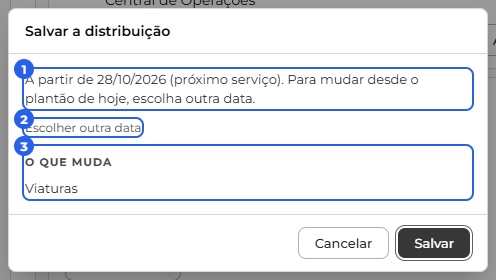
- A partir de quando vale
- Escolher outra data
- O resumo do que muda
Como a escala segue a distribuição
- Todo dia, às 08h, a distribuição começa de novo, com quem está de serviço.
- Quem chega no meio do plantão vai para a próxima função livre da ordem, e quem já estava continua na função dele.
- Os erros seguem uma hierarquia: com menos gente que o mínimo da unidade, aparece só "Efetivo da unidade abaixo do mínimo", e os postos que ficaram abaixo do mínimo ou fora da escala por causa disso não mostram erro próprio. Num dia com só 2 militares no 2ºPEL, por exemplo, aparece só "Efetivo da unidade abaixo do mínimo: 2 de 3".
- O posto que fica fora da escala avisa na cor escolhida aqui (vermelho, amarelo ou sem aviso), na lista do painel do dia e no cartão dele.
As regras que o sistema segue, por dentro, estão no Apêndice: a lógica por trás.
Usuários (o efetivo)
Ver o efetivo e as fichas
A página Usuários reúne todo o efetivo, nas abas Efetivo, Férias, Licenças e Dispensas (estas três explicadas em Férias, licenças e dispensas, mais abaixo). Na aba Efetivo, as unidades aparecem na árvore de unidades (um bloco para a companhia e um para cada pelotão), e os militares de cada uma ficam dentro do bloco, um por linha. O número ao lado do título da página diz quantos estão à vista.
A linha de cada militar. Traz a abreviação do grau, o nome, um identificador e um selo de situação: "Ativo" em verde, ou "Férias", "Licença" e "Dispensa" em âmbar, com a data até quando valem.
Para você, o selo mostra também a conta de quem está ativo: "Sem conta", em cinza, para quem ainda não criou a conta, e "Link de cadastro até", em âmbar, com a data e a hora, enquanto o link de cadastro que você gerou estiver valendo. Cada militar tem um selo só.
Ajustar o que aparece. Dois botões na barra logo abaixo das abas, à direita, mudam a exibição. O Exibir (o olho) escolhe o identificador visível (CPF, RG, telefone ou e-mail), o formato do nome (só o de guerra ou o nome completo com o de guerra em destaque) e liga ou desliga a hierarquia, que é a abreviação do grau.
O Ordem organiza a lista por antiguidade (do mais antigo, o padrão, ou do mais moderno) ou em ordem alfabética (de A a Z ou de Z a A). Essas escolhas valem só para você.
Filtrar e procurar. O botão Filtros abre as colunas Graus e Situação, que encolhem a lista ao que interessa. O número no botão diz quantos filtros estão ligados, e a linha Filtros, embaixo da barra, mostra quais: o x de cada etiqueta tira só aquele filtro, e Limpar filtros tira todos. A busca tem dois modos, trocados no botão ao lado: Marcar realça quem combina com o texto sem esconder os demais, e Filtrar deixa à vista só quem combina. Ela procura por nome de guerra, nome completo, CPF ou RG.
Em Situação, depois de um traço, ficam Correção pendente e Inativos. Elas começam desmarcadas e somam à lista: com Todos marcado, aparecem todos e mais elas; para ver só elas, desmarque Todos.

- Grau, nome e identificador
- Selo de situação
- Botões Ordem e Exibir

- Grau, nome e identificador
- Selo de situação
- Botões Ordem e Exibir
A ficha do militar. Um clique na linha do militar abre a ficha no painel à direita, com o grau e o nome de guerra no topo, a lotação ao lado e o nome completo logo abaixo. As informações ficam em blocos, cada linha com o rótulo e o valor ao lado; o que ainda não foi preenchido aparece com um traço.
Ela tem cinco abas. Dados, com os dados pessoais (nome completo, CPF, RG, nascimento com a idade, CNH, celular e e-mail). Carreira, com os Dados institucionais (quadro, posto, nome de guerra, setor, data de inclusão, colocação no curso de formação (CFP, CFO ou CHOE), antiguidade, lotação e situação), as Datas de promoções e as Transferências. E Férias, Licenças e Dispensas, com o que o militar teve em cada ano (veja Férias, licenças e dispensas). Qualquer pessoa consulta a ficha; corrigir os dados e mudar a carreira é tarefa do administrador.

- Abas da ficha
- Bloco Dados pessoais
Quando o militar foi cadastrado sem conta de login, a aba Dados avisa no topo, com "Sem acesso ao sistema". Ele existe para a escala funcionar, mas não entra em trocas, folgas nem extrajornada enquanto não criar a própria conta.
A data de inclusão e as datas de promoção. A data de inclusão é o início do militar na corporação, a data do primeiro posto. Na praça, o primeiro posto depende dela: quem foi incluído a partir de 01/11/2024 começa como Soldado 3ª Classe; antes disso, como Soldado 2ª Classe. Em Datas de promoções aparece a data de cada posto seguinte, na ordem da carreira, com a abreviação (Sd.1ªCl., Cb. e assim por diante); o posto ainda sem data aparece com um traço.
No oficial, o bloco mostra os postos do quadro dele (Cadete, Aspirante, 2º Tenente e os seguintes; no quadro de especialistas, Cadete Especialista, 2º Tenente e os seguintes). Se ele foi praça, as datas daquele tempo ficam num bloco à parte, Datas como praça (só registro), que abre e fecha pela seta e não entra na antiguidade. A data de inclusão não muda quando o militar passa de praça para oficial.

- Datas de promoções, uma por posto
- Datas como praça, que abre pela seta
A antiguidade. A posição de cada militar aparece na ficha, em Antiguidade (por exemplo, "37º no sistema"), e é a ordem padrão da lista de Usuários. Na escala, ela decide quem tem a preferência nas funções e serve de desempate.
Hoje, enquanto faltam as datas de promoção de muita gente, a ordem dentro de cada posto é a que o administrador define, e quem é cadastrado ou promovido entra como o mais moderno do posto. Quando as datas estiverem cadastradas, o sistema volta a calcular a antiguidade sozinho, comparando os militares pelos critérios abaixo, nesta ordem. Quando dois empatam num critério, decide o seguinte.
- 1Posto ou graduaçãoO mais alto vem antes.
- 2As datas dos postosComparadas do posto atual para baixo: vem antes quem chegou primeiro. Na praça, a data de inclusão vale como a do primeiro posto. No oficial, contam do posto atual até o 2º Tenente; no Cadete e no Cadete Especialista, conta a entrada no quadro.
- 3Quadro normal antes do especialistaCom essas datas iguais, o oficial do quadro normal vem antes do oficial especialista (CHOE).
- 4A data de AspiranteEntre dois oficiais do quadro normal, a de Aspirante também conta.
- 5Entrada no quadroNa praça, a data de inclusão; no oficial, a data de Cadete ou de Cadete Especialista. A mais antiga vem antes.
- 6Colocação no cursoNo curso de formação, o menor número vem antes.
- 7Data de nascimentoO mais velho vem antes.
- 8Ordem alfabéticaPelo nome completo, de A a Z.
Cadastrar o efetivo e liberar acesso Apenas administradores
Para incluir um militar, abra Usuários e clique em Novo usuário, o botão com a etiqueta ADM, no alto da página, à esquerda. O cadastro abre no painel à direita.
Você preenche os dados pessoais (nome, CPF, RG, nascimento e CNH), os dados institucionais (tipo, data de inclusão, posto ou graduação, nome de guerra, setor e lotação) e, se tiver, a colocação e as datas de promoção. A colocação é opcional para você: o próprio militar pode informá-la no Meu perfil. O militar entra na antiguidade como o mais moderno do posto; ajuste a posição dele na aba Antiguidade (veja Ajustar a antiguidade).
Celular e e-mail são opcionais: são dados do próprio militar, que ele informa ao criar a conta. A ficha pode existir só para a escala funcionar.

- Seção Dados pessoais
- Campos Celular e E-mail, opcionais
- Seção Dados institucionais
O posto e as datas de promoção. O Posto só libera depois do tipo e da data de inclusão, porque a lista de postos depende dela: o Soldado 3ª Classe só aparece para quem foi incluído a partir de 01/11/2024. Ao escolher o posto, o sistema abre a seção Datas de promoções, com um campo para cada posto depois do primeiro (o primeiro é a própria data de inclusão). No oficial que foi praça, as datas daquele tempo ficam na seção Datas como praça (só registro), que abre ao clicar.

- Data de inclusão
- Posto, liberado depois da data de inclusão
Data de inclusão: o início na corporação, a data do primeiro posto. Ela não muda quando o militar passa de praça para oficial. As datas de promoção são opcionais: deixe em branco o que não tiver e complete depois, pelo lápis da ficha. Nenhuma pode ser antes da data de inclusão, e elas sobem junto com o posto.
Ao Salvar, o militar passa a existir no sistema e já aparece na árvore de unidades; se for operacional, pode entrar na escala. O sistema mostra um resumo do que foi cadastrado.
Cadastrar não cria senha. O Novo usuário registra a pessoa, não o acesso. Não existe senha padrão, e você nunca escolhe a senha de ninguém: quem cria a senha é o próprio militar, ao criar a conta pelo link.
Liberar o acesso (o link de cadastro). O militar cria a própria conta por um link de cadastro que você gera na ficha dele. Abra a ficha (clique na linha do militar, em Usuários): enquanto ele não tem conta, o bloco Acesso ao sistema, na aba Dados, mostra a situação e o botão Gerar link de cadastro.

- Situação do acesso
- Botão Gerar link de cadastro
Ao gerar, o bloco mostra até quando o link vale e a mensagem pronta: o nome do militar, o link e a data e a hora em que ele expira. Clique em Copiar mensagem e cole no privado do militar (WhatsApp ou e-mail), nunca num grupo. Ele abre o link, confirma o CPF, confere os dados e cria a senha.

- Até quando o link vale
- A mensagem pronta para mandar
- Botões Copiar mensagem e Cancelar link
Um link por vez. Enquanto o link vale (24 horas, uma vez só), a ficha mostra sempre a mesma mensagem, e o botão de gerar outro não aparece. Se você mandou para a pessoa errada, ou o militar perdeu a mensagem e o link venceu, use Cancelar link: ele deixa de funcionar na hora, e o botão de gerar volta. Enquanto o link vale, a linha do militar mostra o selo "Link de cadastro até", com a data e a hora.
Quando o militar cria a conta, você recebe no sino o aviso Conta criada, que abre a ficha dele. Se não foi ele quem criou, você percebe na hora. O e-mail e o celular que ele informou já valem; se ele corrigiu outro dado, a correção chega para você aprovar, como uma correção comum.
Link de nova senha. Quem já tem conta e esqueceu a senha pede a você pessoalmente. Na ficha dele, o mesmo bloco Acesso ao sistema traz o botão Gerar link de nova senha, que funciona do mesmo jeito: a mensagem pronta, Copiar mensagem, Cancelar link e um link por vez. O militar abre o link, confirma o CPF e cria a senha nova.
Confirme que é a própria pessoa. O link dá acesso à conta. Antes de gerar o link de nova senha, confirme que o pedido é mesmo do militar, pessoalmente ou pelo telefone que já está na ficha. A senha antiga continua valendo até ele criar a nova, e você nunca vê nem escolhe a senha de ninguém.
Promover, transferir e dar baixa Apenas administradores
Para você, a ficha já abre pronta para editar. As mudanças de carreira ficam na aba Carreira: Promover e Transferir na barra logo abaixo das abas, e o botão vermelho Dar baixa do sistema no fim da aba. Cada um abre a sua tela no lugar da ficha, com Voltar em cima e, no rodapé, Cancelar e o botão que grava. Cada ação pede confirmação, registra no histórico e mostra um resumo ao final. A barra também pode trazer o botão Administração, explicado em Dar e tirar a administração.

- Botões Promover e Transferir
- Lápis de corrigir o bloco
Promover. Escolha o Tipo da carreira e o sistema calcula sozinho o posto de destino, em Promovido a: no mesmo tipo, o posto seguinte; mudando de tipo, o posto de entrada do novo tipo. O sistema não pula postos, e uma mudança que seria rebaixamento não é aceita. A data da promoção não pode cair no futuro e precisa ser depois da última data de promoção gravada (ou da data de inclusão, se não houver nenhuma), como diz a nota logo abaixo. Ao confirmar, o sistema grava a data do novo posto, atualiza o posto e a antiguidade e recalcula a escala.
Quando a promoção leva o militar de praça para oficial, a data de inclusão continua a mesma: a data da promoção vira a do novo posto (Cadete ou Cadete Especialista), e as datas de quando ele era praça ficam guardadas como registro.

- Tipo da carreira
- Posto calculado em Promovido a
- Data da promoção e a nota da data limite
Transferir. A tela mostra a lotação de hoje logo abaixo do título. Você escolhe a unidade em Para (na árvore de unidades) e a data A partir de, que aceita até uma semana para trás ou uma data futura. A transferência vale a partir dessa data: até a véspera o militar é da unidade antiga e, daí em diante, da nova. Na escala, os dias anteriores continuam na unidade antiga.
Antes de confirmar, a janela mostra a lista do que vai acontecer a partir da data: a saída da escala e cada troca, folga e extra do militar que muda, pela mesma regra do Tirar do ciclo (veja Montar o ciclo). Na transferência, as cotas de extra dele continuam. O que foi cancelado não volta, mesmo que a transferência seja cancelada depois. Confirmando, o militar sai do ciclo da unidade antiga na data e fica disponível na nova, onde você o coloca no ciclo pela aba Ciclo do painel do dia, a partir da data da transferência.

- A lista do que vai acontecer
- O que foi cancelado não volta
Uma transferência com data futura aparece como uma nota no alto da aba Carreira, com o botão Cancelar. Até a data, o militar continua na unidade antiga. Enquanto ela existir, o botão Transferir fica desligado: para marcar outra, cancele a marcada primeiro.
Dar baixa. No fim da aba Carreira, o botão Dar baixa do sistema abre a tela com a data A partir de (hoje, se você não mudar) e o botão Dar baixa. A confirmação mostra o nome, o CPF e a lista do que vai acontecer: as trocas, folgas e extras, como na transferência, e as cotas, porque o militar sai da divisão das cotas de extra a partir do mês. O militar passa a "Inativo" e sai do efetivo ativo, reaparecendo só com o filtro Inativos. Na ficha de um militar inativo, a barra traz só Readmitir ao efetivo: a tela pede a data, e ele volta ativo, mas fora do ciclo; você o coloca na escala pela aba Ciclo do painel do dia.
Corrigir os dados da ficha. O lápis no título de cada bloco abre a correção daquele bloco: Dados pessoais, na aba Dados, e Dados institucionais (data de inclusão, nome de guerra, setor e colocação) e Datas de promoções, na aba Carreira. O campo que você muda ganha uma marca à esquerda, e o rodapé conta as alterações não salvas. O CPF não muda, e o posto e a lotação também não se corrigem aqui, porque mudam por promoção e transferência. Celular e e-mail são opcionais, com uma exceção: quem já tem conta precisa de e-mail. Se você trocar o e-mail de quem tem conta, o militar continua entrando com o CPF e a senha de sempre.
Nas Datas de promoções, todas são opcionais: preencha as que tiver e deixe em branco o que não tiver; apagar uma data a tira da ficha. Nenhuma pode ser antes da data de inclusão, e elas sobem junto com o posto. A data de inclusão também confere o posto: o Soldado 3ª Classe só vale para quem foi incluído a partir de 01/11/2024.
Ao Salvar, o sistema grava e mostra o resumo. Se você alterar a CNH, ele mostra a partir de quando a distribuição será recalculada, já que a CNH decide quem pode ser condutor: o próximo dia de serviço, ou outra data em Escolher outra data. Se você trocar de aba ou fechar a ficha com algo digitado e não salvo, o sistema pergunta antes de descartar.
Alterações na ficha. No rodapé da ficha, você vê o que já foi mudado naquele militar, por quem e quando, inclusive as férias, licenças e dispensas. A lista começa fechada e abre pela seta.
Dar e tirar a administração Apenas administradores
Cada administrador tem um papel. Todos fazem as mesmas ações de administrador; o papel diz em quais unidades:
- Administrador de pelotão: o pelotão onde está lotado.
- Administrador de companhia: a companhia e os pelotões dela.
- Administrador geral: todas as unidades.
Para dar, trocar ou tirar o papel de um militar, abra a ficha dele, vá à aba Carreira e clique em Administração, na barra ao lado de Promover e Transferir. O botão só aparece quando você pode mudar o papel daquele militar: você dá e tira papéis até o seu nível, para os militares da sua área, inclusive outro administrador do mesmo nível. O administrador de pelotão, por exemplo, pode nomear outro administrador para o pelotão dele. Ninguém muda o próprio papel, e o militar precisa estar ativo.

- O papel
- Onde o papel vale
- O que o papel faz
Em Papel, a lista traz só os papéis que você pode dar, mais Sem administração, para tirar o papel. Vale para mostra onde o papel vai valer, e o sistema calcula pela lotação do militar: o pelotão dele, a companhia dele ou todas as unidades. A nota lembra o que o papel escolhido faz. Ao Salvar, o sistema grava, registra no histórico e mostra o resumo.
Quem tem papel ganha, na aba Carreira, o bloco Administração, com o papel, onde ele vale e quem o concedeu, com a data. O bloco aparece para todos que abrem a ficha, assim qualquer militar sabe a quem recorrer.
Cada um na sua área. Os botões de administração aparecem só onde o seu papel pode agir. O administrador de pelotão faz no pelotão dele tudo o que o de companhia faz na companhia: a escala do dia, o Ciclo, os postos, a Distribuição, as fichas, os afastamentos, as folgas, os avisos e o Histórico. A Antiguidade e a Extrajornada são da companhia inteira, e qualquer administrador dela mexe, inclusive o de um pelotão. A troca é aprovada por quem administra um dos dois militares. Fora da sua área, você vê as telas como qualquer militar, só para consulta.
O papel termina sozinho na baixa e na transferência para fora da área dele. O administrador de companhia que muda de pelotão dentro da mesma companhia continua com o papel. Quando o seu papel muda, os botões acompanham no seu próximo login.
Ajustar a antiguidade Apenas administradores
Enquanto faltam as datas de promoção, é você quem define a ordem dentro de cada posto, na aba Antiguidade da página Usuários. Ela mostra a sua companhia, com um bloco por posto, do mais antigo ao mais moderno. Cada militar aparece com o número dentro do posto, a graduação, o nome de guerra e o pelotão.
Clique no militar e use as setas (ou as teclas ↑ e ↓ do teclado) para subir ou descer uma posição. Quem mudou de lugar ganha uma marca à esquerda, e o rodapé conta as alterações. O título de cada posto recolhe a lista, e a busca, no alto, realça quem você procura.

- Título do posto, que recolhe a lista
- Militar escolhido, com as setas
- Botão Salvar
Nada é gravado até você clicar em Salvar. O sistema mostra a partir de que data a escala será refeita, porque a antiguidade decide o Chefe de Socorro e a ordem das vagas: o próximo dia de serviço, ou outra data em Escolher outra data. Depois, mostra o resumo. Cancelar volta à ordem gravada. Quem é cadastrado ou promovido entra como o mais moderno do posto: ajuste a posição dele aqui.
Aprovar correções de dados Apenas administradores
As correções de dados que esperam a sua decisão ficam na página Pendências e na aba Pendências da página Usuários (1), com a etiqueta ADM. O número na aba conta os pedidos, e cada cartão mostra o pelotão de quem pediu.

- A aba Pendências, com o número de pedidos
- Correção de dados
Correções (mudanças de dados). São os pedidos que os militares mandam pelo Meu perfil. Cada cartão (2) é um militar com as alterações que ele enviou juntas. Clicando, o painel mostra cada linha com o campo, o valor atual e o novo, com uma caixa de seleção, mais o Selecionar tudo no topo.
Aprovar e Recusar valem só para o que está marcado, então você pode aceitar umas alterações e recusar outras no mesmo pedido. O Recusar também pede o motivo opcional. A correção de dados é decidida por quem administra o militar: a lista mostra os pedidos da sua área.
No Efetivo, a linha de quem tem uma correção esperando ganha o selo "Correção pendente", visível só para os administradores.
Férias, licenças e dispensas
Ver os afastamentos do ano
As férias, as licenças e as dispensas ficam em Usuários, nas abas Férias, Licenças e Dispensas. Cada aba mostra todo o efetivo das unidades escolhidas no seletor e, ao lado de cada militar, tudo o que ele teve no ano, uma linha por afastamento, na ordem das datas: o tipo, as datas e os dias. Quem não teve nada no ano aparece só com o nome. O número no título de cada unidade diz quantos tiveram.
A licença pode ser de tratamento da própria saúde, de tratamento de saúde de familiar, de interesses particulares, especial ou de capacitação. A dispensa pode ser de gala (casamento), de nojo (falecimento) ou comum. Nas licenças e dispensas, um selo diz como o afastamento mexe na escala: "Segue no fluxo", o militar continua no ciclo e só os dias do afastamento saem da escala; "Fora do fluxo", o militar saiu do ciclo e volta quando o administrador o incluir de novo.
O ano. Na barra, à esquerda, fica o ano. As setas passam de um ano para outro, e um clique no ano abre a lista dos anos. Fora do ano atual aparece o botão Hoje, que volta a ele. Dentro do ano, as datas aparecem sem o ano; um afastamento que passa de um ano para o outro mostra o ano que muda, por exemplo "15/12 a 05/01/2027", e aparece nos dois anos.
Filtrar e procurar. O botão Filtros destas abas tem Graus, Situação (quem teve ou quem não teve afastamento no ano) e, nas licenças e dispensas, Tipo: escolhido um tipo, ficam só os militares que tiveram aquele tipo. A busca e a ordem funcionam como no Efetivo.

- O ano
- Os afastamentos do militar no ano, um por linha
- Filtros
Na ficha. Um clique no militar abre a ficha dele já na aba e no ano que você estava vendo. Lá, cada tipo tem a sua caixa, com os períodos do ano: Em curso, Marcado ou Encerrado, as datas e os dias. O ano da ficha muda pelas setas no alto, sem mexer na lista.
Quem não é administrador só consulta. O motivo de uma licença ou dispensa fica com o administrador do militar, e as licenças de saúde (da própria saúde e de familiar) aparecem só como "Licença" para quem não administra o militar.
Lançar e corrigir um afastamento Apenas administradores
O caminho é o militar. Em Usuários, na aba do que você quer lançar, clique no militar: a ficha abre naquela aba e naquele ano, com uma caixa por tipo (Férias tem uma; Licenças, os cinco tipos; Dispensas, os três) e o lápis em cada caixa. A caixa sem nada no ano diz, por exemplo, "Nenhuma licença deste tipo em 2026.".

- Férias, Licenças e Dispensas
- O ano
- Lápis da caixa do tipo
Os períodos de um tipo. O lápis abre, no lugar da ficha, os períodos daquele tipo no ano, cada um na sua caixa, com a data de início e a de fim lado a lado e os dias. O ✕ tira o período, e o Adicionar período, embaixo, abre uma caixa nova. Sem período no ano, ela já abre com uma caixa em branco. Os períodos do mesmo tipo não podem se cruzar.
Dentro ou fora do fluxo da escala. Na licença e na dispensa, cada período tem a pergunta Tirar do fluxo da escala?, com Sim ou Não. Ao preencher as datas, o sistema sugere: até 15 dias, Não; de 16 em diante, Sim. Quem decide é você, e uma frase embaixo diz o que a escolha faz. Cada período tem também o Motivo, opcional; não escreva diagnóstico nem dados médicos.
O que já passou fica como está. Dá para mudar até uma semana para trás, como em todo o sistema. O período que terminou antes disso aparece apagado e não muda. O que começou antes disso mantém a data de início e a escolha do fluxo e não pode ser tirado, mas a data de fim e o motivo ainda mudam, por exemplo quando o militar volta antes.

- Período que já passou, que não muda
- Tirar do fluxo da escala
- Adicionar período
Ao salvar. O sistema grava os períodos do tipo de uma vez e refaz a escala desde o primeiro dia que mudou: para o militar que está no ciclo, os dias novos saem da escala e os que deixaram de ser afastamento voltam a ser serviço. Se nos dias novos ele já tem uma troca, uma extrajornada ou uma folga, o sistema mostra a lista e pergunta se você continua. Continuando, nada disso é desfeito: o serviço fica em amarelo na escala e a folga continua marcada. Depois a ficha volta, já com a mudança, e abre o resumo. A mudança fica registrada no Histórico e nas Alterações na ficha do militar, com quem fez e quando; o motivo não entra no registro.
Fora do fluxo, a volta é manual. Com Sim, o militar sai do ciclo a partir do primeiro dia e só volta quando você o incluir de novo pelo Adicionar da aba Ciclo, na Escala. Por isso, apagar, encurtar ou trocar para Não uma licença fora do fluxo não devolve o militar à escala: antes de salvar, o sistema avisa que ele continua fora da escala, e os outros administradores da área recebem esse aviso no sino. Cinco dias antes da volta, se o militar estiver fora do ciclo e ainda não tiver entrada marcada, o aviso Retorno de afastamento sem entrada no ciclo aparece em Pendências, no Para corrigir.
Ajustes
Ver o ritmo das unidades
A página Ajustes guarda as configurações das unidades: a árvore de unidades, com um card de ritmo em cada uma.
O ritmo é a cadência de serviço e folga da escala automática da unidade, como o 24/48 (24 h de serviço e 48 de folga). O card mostra o valor e a explicação por extenso.

- Card de ritmo da unidade
A página é de consulta: só o administrador muda o ritmo.
Mudar o ritmo Apenas administradores
Clique no card e o painel à direita abre em edição: escolha o novo ritmo no seletor (24/48, 24/72 ou 12/36) e veja a nota do Efeito, que avisa que a escala automática da unidade será regerada. O Salvar só habilita quando você troca o valor.

- Seletor de ritmo
- Nota do efeito
Ao salvar. Como o ritmo muda o "quando" do serviço de todos, o sistema mostra a data a partir da qual ele vale (o próximo dia de serviço, ou outra em Escolher outra data), regenera a escala automática dos militares da unidade dessa data em diante, recalcula a distribuição, registra no histórico e abre o resumo.
Marcar o expediente Apenas administradores
Para o administrador, a página Ajustes tem duas abas embaixo do título: Escala e Expediente. A aba Expediente mostra o mês de cada unidade marcada no seletor, com o expediente dos administrativos lotados nela. O dia de expediente traz o horário quando foge do padrão da unidade; o dia de folga aparece em cinza, com o motivo e quem marcou. Os feriados nacionais já vêm marcados.
Clique no dia e o painel à direita abre: escolha Trabalha (com o horário) ou Folga (Feriado, Ponto facultativo, Recesso ou Outro), dê um nome se quiser e, para um período, escolha Até o dia. Repetir todo ano vale para as datas fixas, e Vale para diz as unidades. O lápis ao lado do nome da unidade muda o horário padrão. O dia marcado por um nível acima (a companhia, por exemplo) aparece só para leitura: o de cima vale.
Avisos
Os meus avisos
O sistema mantém você informado pelo sino, no alto da tela, à direita. O número sobre o sino conta os avisos que você ainda não leu. Clicando nele, abre uma lista com os seus avisos novos, o mais novo em cima, cada um com o ícone do assunto: troca, folga, dados ou, para os outros, o sino.

Os avisos de administração, como um pedido de troca ou de folga para aprovar, vêm na mesma lista, com a etiqueta ADM antes do título.
Ler. Um aviso sai do sino quando você o lê, e o número cai junto: depois de ler tudo, o número some. O aviso de um pedido que já foi decidido também sai sozinho.
Clicar num aviso leva direto para a tela do assunto; o aviso que pede uma resposta sua abre a página Pendências, já no pedido. Há também o Marcar todas como lidas, que limpa o sino de uma vez, e o Ver todos, que abre a página Avisos.
Avisar não é resolver. O sino conta o que aconteceu. O que falta você fazer, como responder a uma troca ou o prazo da extra, fica na página Pendências, com o número próprio no menu, até ser resolvido. Por isso, ler o aviso de um pedido não o apaga: ele continua esperando você lá.
O que chega para você. Os avisos acompanham o que acontece com as suas trocas, folgas e dados, e os comunicados novos:
- Trocas: "Troca de serviço para confirmar" (quando um colega pede que você cubra o serviço dele), "Troca aprovada", "Troca recusada", "Troca recusada pela administração", "Troca cancelada", "Troca expirada" (quando ninguém respondeu ao seu pedido até 7 dias depois do primeiro dia da troca) e "Troca alterada" (quando uma parte da troca sai porque um dos dois saiu da escala, e fica um saldo entre vocês).
- Folgas: "Folga aprovada", "Folga recusada", "Folga cancelada", "Folga concedida" (quando o administrador concede uma folga direto para você) e "Saldo de folgas ajustado".
- Dados: quando o administrador decide uma correção de dados que você pediu.
- Comunicados: "Novo comunicado", com o título dele, quando o administrador publica um comunicado para você. Clicar abre a aba Comunicados.
Quando quem recusou escreveu um motivo, ele vem no aviso. O mesmo vale para o cancelamento e a alteração de uma troca aprovada, em que o motivo é obrigatório.
A página Avisos. O Ver todos abre a página Avisos, com duas abas. Em Notificações fica o histórico do que aconteceu com você nos últimos 90 dias, com os não lidos em negrito e o ícone do assunto. A lista mostra os 50 mais recentes; no fim dela, Mostrar mais antigos traz os seguintes. Ao lado do título aparece o mesmo número do sino. O que espera uma resposta sua fica na página Pendências. Em Comunicados ficam os avisos gerais que o administrador publica para as unidades ou os militares escolhidos, ou para todos, e que você lê.

Criar comunicados Apenas administradores
Criar um comunicado. O botão Novo comunicado, com a etiqueta ADM, na página Avisos, abre o painel. No topo você escolhe o destinatário: Unidades (na árvore, e uma unidade alcança as de baixo), Militares (da lista, com busca) ou Todos. Abaixo vêm o título e a mensagem. Ao Salvar, o comunicado é publicado e passa a aparecer no mural para quem ele alcança, e cada um recebe no sino o aviso "Novo comunicado".

- Para quem: unidades, militares ou todos
- Título e mensagem
Para tirar um comunicado do ar, use a lixeira no card dele, na aba Comunicados; o sistema pede confirmação antes de remover. A lixeira aparece nos comunicados que você publicou e nos publicados por quem é da sua área. O aviso dele sai do sino de quem ainda não leu.
Histórico Apenas administradores
O Histórico é o registro de auditoria do sistema: cada ação que grava algo (cadastrar, promover, afastar, mudar o ritmo, aprovar uma folga, publicar um comunicado) deixa um evento aqui. As trocas têm o histórico próprio, na aba Todas da página Trocas. A página usa a mesma árvore de unidades, com os eventos agrupados por unidade e a contagem "N registros" em cada uma. Cada administrador vê o Histórico da sua área: o de pelotão, o do pelotão dele; o de companhia, o da companhia e dos pelotões dela; o geral, o de todas as unidades.
Cada evento é um cartão que abre. Recolhido, ele mostra a parte do sistema a que pertence (Usuários, Escala, Folgas e assim por diante), o assunto e a linha com quem fez, o que fez e quando. Clicando, o cartão revela os detalhes das mudanças, no mesmo formato do resumo que aparece ao salvar.

- O período e o botão Filtros (tipo e autor)
- Evento recolhido
Filtrar. À esquerda, o Período (Hoje, Últimos 7 dias, Últimos 30 dias ou Tudo, começando nos 30 dias) refaz a busca ao mudar. À direita, o botão Filtros abre as colunas Tipo (a parte do sistema) e Autor (quem fez a alteração), e dá para marcar mais de um em cada. A linha Filtros, embaixo da barra, mostra o que está ligado: o x de cada etiqueta tira só aquele, e Limpar filtros tira todos. Trocar o período limpa o Tipo e o Autor.

- Quem fez, o que fez e quando
- Detalhes das mudanças
Cores e selos
As cores e os selos seguem sempre a mesma ideia no sistema todo, para você consultar quando bater a dúvida:
- Aprovada Verde. Tudo certo: aprovado, ativo, sem problema.
- Pendente Amarelo. Atenção: algo pendente ou uma ressalva a conferir.
- Recusada Vermelho. Problema: um erro, um conflito ou algo recusado.
- Cancelada Cinza. Encerrado sem efeito, como algo cancelado.
Os selos são essas etiquetas coloridas que resumem a situação de um item. Os mais comuns são "Ativo", "Pendente", "Aprovada", "Recusada" (ou "Recusada pela administração") e "Cancelada".
Onde buscar ajuda
Se ficar com uma dúvida ou algo não sair como esperado, você tem três caminhos.
- O administrador da sua unidade. É quem cuida do que você não altera sozinho: os seus dados, a escala, as folgas, as trocas, o acesso e as aprovações. Para as questões do dia a dia do serviço, fale com ele.
- Fale conosco. No menu do seu nome, no canto do cabeçalho, "Fale conosco" abre uma janela para enviar um recado à equipe do sistema. Você escolhe o tipo (Sugestão, Problema ou Outro), escreve um assunto e a mensagem. Serve para relatar uma falha do sistema ou sugerir uma melhoria; a tela em que você está vai junto, para ajudar a equipe a entender. Quando a equipe corrige um problema que você relatou, você recebe no sino o aviso "Problema corrigido".
- O Manual. Este documento fica sempre disponível no menu do seu nome, em "Manual", para consultar como cada parte funciona.
Em resumo: dúvidas sobre o seu serviço e os seus dados são com o administrador; problemas e ideias sobre o sistema vão pelo Fale conosco.
Apêndice: a lógica por trás
Esta parte explica, por dentro, as regras que o sistema segue para montar a escala sozinho. Você não precisa mexer em nada disso, mas entender ajuda a ler o resultado.
- 1AntiguidadeO mais antigo tem preferência, e é o desempate em tudo.
- 2Chefe de Socorro e Oficial de ÁreaOs mais antigos de serviço. Quem assume continua na função até o fim do plantão.
- 3Ordem de importânciaCom N militares de serviço, enchem as N primeiras funções da ordem. Quem sobra fica sem função.
- 4Quem escolherCada função escolhe, na ordem, o mais antigo ou o mais moderno ainda sem função, ou uma graduação.
- 5CondutorSó quem tem CNH compatível com a viatura.
- 6Acúmulos por faltaQuando uma função fica sem gente, quem está na 1ª opção de serviço faz as duas; sem ninguém nela, a próxima.
- 7RodízioEvita que o militar repita a função do último serviço.
Antiguidade em primeiro lugar. Em quase toda escolha, o mais antigo tem prioridade, e a antiguidade é o desempate em tudo. Cada função diz se é de praça ou de oficial, e o sistema só encaixa quem é do tipo certo.
Chefe de Socorro e Oficial de Área são os mais antigos. O Chefe de Socorro é o praça mais antigo de serviço no pelotão; o Oficial de Área, o oficial mais antigo. Quem assume a função continua nela até o fim do plantão, mesmo que chegue alguém mais antigo depois.
Condutor só com CNH. A função Condutor de uma viatura só fica com quem tem CNH compatível com a categoria que a viatura exige (por exemplo, uma viatura que pede C aceita quem tem C, D ou E). Quem cobre o Condutor num acúmulo por falta também precisa da carteira. Quem não tem a carteira nunca é posto como condutor.

- Chefe de Socorro, o praça mais antigo de serviço
- Condutor, com a CNH exigida
Acúmulos: a mesma pessoa em duas funções. Quando falta gente, a mesma pessoa cobre mais de uma função: quem está na opção do acúmulo por falta faz a dele e a que ficou vazia. O caso clássico: sem outro condutor habilitado, o Chefe de Socorro dirige a viatura dele e fica nas duas funções, quando a unidade permite. Há também os acúmulos fixos, funções que são sempre da mesma pessoa.
A tela mostra numa linha só, com os dois rótulos e um nome. Como o chefe já conta como efetivo, a cadeira que ele liberou vira mais um Efetivo para o próximo da fila. O acúmulo vale só dentro da mesma unidade: um militar não fica em funções de duas unidades ao mesmo tempo. Para alguém de outra unidade trabalhar aqui num dia, o administrador usa o Adicionar militar do painel do dia.

- Os dois rótulos, Chefe de Socorro e Condutor
- Um nome só
Quem chega no meio do plantão. A distribuição começa de novo todo dia, às 08h. Quem chega no meio do plantão vai para a próxima função livre da ordem, e quem já estava continua na função dele.
Ajustes finos: graduação e rodízio. Cada função pode pedir uma graduação, como "Um 3ºSgt. ou o mais próximo" ou "Somente 3ºSgt. ou fica vazia", com o aviso quando ela falta. E o rodízio faz o sistema evitar que o militar repita a função do último serviço; quando não há outro, ele repete, com o aviso amarelo.